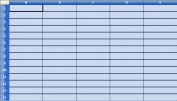
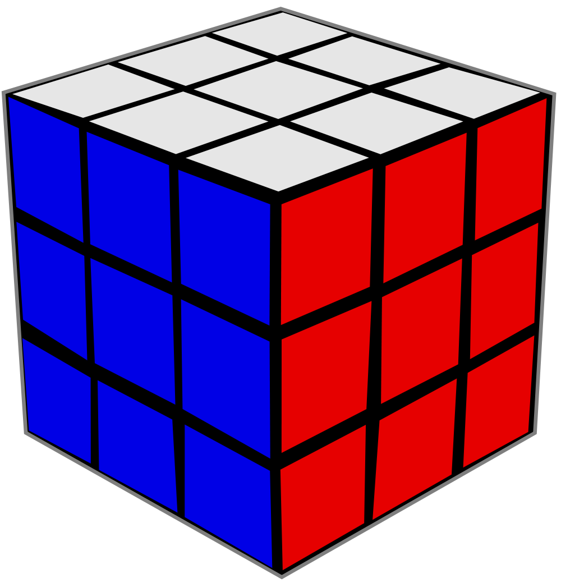

Classes fonamentals
El llenguatge Java proporciona una gran quantitat de paquets de classes, la seva API, que són referència bàsica per a qualsevol programador en Java i, per tant, ens correspon endinsar-nos en el seu coneixement. Val a dir, però, que això només és possible quan ja es dominen els mecanismes de la programació orientada a objectes (encapsulament, herència i polimorfisme).
La nomenclatura dels paquets és uniforme i ajuda a categoritzar les classes. El primer qualificador és java o javax (per a les classes dedicades a la interfície gràfica) o org (per a les classes dedicades a donar suport a paquets de determinades organitzacions). Pels paquets java.* i javax.*, el segon qualificador dóna una idea de la matèria que cobreix el paquet, com io (entrada/sortida) i math (funcions matemàtiques). Hi ha temes que contenen subpaquets, amb un tercer qualificador més específic (per exemple, javax.sound.midi, amb un nom prou significatiu).
I, com ens podem plantejar el coneixement de l’extensa API de Java? Intentar fer un recorregut per tots els paquets i classes seria, gairebé, un suïcidi. El consell és plantejar l’aprenentatge dels paquets agrupats per funcionalitats, començant per les més usuals en qualsevol tipus de desenvolupament: representació i manipulació de col·leccions d’objectes, informació referent a les classes i llur estructura, control d’errors, gestió d’entrades i sortides, desenvolupament d’interfícies gràfiques…
En alguns casos, la documentació del mateix llenguatge Java agrupa, sota un nom determinat, el conjunt de paquets relacionats amb una funcionalitat determinada. Les agrupacions d’aquest tipus són simplement documentals i no es tradueixen en cap concepte dins el llenguatge Java. I respecte a la nomenclatura d’aquestes agrupacions, la plataforma Java no és uniforme i tant utilitza el mot API (per referir-se a un subconjunt de l’API de Java) com el mot framework com no utilitza cap mot especial. Com a exemples d’aquesta no uniformitat, podem visitar la pàgina principal de la documentació HTML de la plataforma Java SE 6, en la qual trobarem una imatge com la de la figura que mostra tots els components de la plataforma Java.
Un escombratge del ratolí per damunt dels diversos components ens mostra el nom oficial que Java dóna als components. Entre d’altres, hi podem veure Collections Framework (Collections), Reflection API (Reflection), Input/Output API (I/O), Abstract Window Toolkit (AWT), Graphical User Interface Components (Swing), Java Database Connectivity API (JDBC), Java archive file format (JAR), Input Method Framework (Input Methods), etc.
Com es veu, hi ha funcionalitats batejades amb el sufix API, altres amb el sufix framework i altres sense cap sufix especial. Queda clar, doncs, que Java utilitza el mot framework per batejar alguns components de la plataforma. Aquest concepte no és propietat de la plataforma Java sinó que s’utilitza força en el món de la programació orientada a objectes.
Un framework (entorn o marc de treball) és un concepte utilitzat en la programació orientada a objectes per designar un conjunt de classes que defineixen un disseny abstracte i una estructura per solucionar un conjunt de problemes relacionats.
De tot el mapa presentat a la figura, en aquest apartat ens centrarem en només dos parts molt concretes. Per una banda, una part molt important de “lang i util”, la centrada en el control i gestió d’errors: les excepcions. I d’altra banda, la ”Collections Framework”.
Excepcions
En el desenvolupament de programes en qualsevol llenguatge de programació, el programador ha de disposar de mecanismes (proporcionats pel llenguatge) per detectar els errors que es puguin produir en temps d’execució. Així, per exemple, si un programa ha d’accedir a un fitxer que es troba en un dispositiu determinat, el programador ha d’haver previst que el fitxer pot no ser accessible i, per tant, ha d’haver establert les alternatives d’execució enlloc de provocar una aturada brusca del programa.
S’anomena gestió d’excepcions el conjunt de mecanismes que un llenguatge de programació proporciona per detectar i gestionar els errors que es puguin produir en temps d’execució.
La gestió d’excepcions no preveu mai els errors de sintaxi que es detecten en temps de compilació i, molt poques vegades, els anomenats errors de programació que no s’haurien de produir mai: intent d’accés a una posició inexistent en una taula, divisió per zero, intent d’accés per una referència nul·la…
Hi ha dues maneres de gestionar les excepcions:
- De la manera tradicional, dissenyant els mètodes de manera que retornin un codi d’error que es revisa després de la crida a la funció o mètode amb l’ajut d’instruccions condicionals per tal de prendre la decisió adequada. Aquesta tècnica no dóna bons resultats quan l’error és fatal (ha de provocar la finalització del programa) i es pot produir en diferents nivells de crides internes, ja que la funció o el mètode dissenyats per nosaltres es pot cridar dins d’altres funcions o mètodes, fet que fa impossible saber la cascada de crides fins al punt en el qual s’ha produït l’error.
- Utilitzant construccions especials per a la gestió d’errors proporcionades pel llenguatge de programació, com és habitual en els llenguatges moderns com C++, Visual Basic i Java, que acostumen a proporcionar mecanismes de propagació de l’error cap a les funcions o mètodes que han cridat la funció o mètode en què s’ha produït l’error, de manera que és possible conèixer la cascada de crides fins el punt en el què s’ha produït l’error.
El model de gestió d’excepcions que proporciona el llenguatge Java és simple: en produir-se un error, la màquina virtual llança (throw) un avís que el programador hauria de poder capturar (catch) per resoldre la situació problemàtica.
Tipus d'excepcions
El llenguatge Java distingeix entre error i excepció. Els errors corresponen a situacions irrecuperables, que no tenen solució i que no depenen del programador, el qual no s’ha de preocupar de capturar. No s’haurien de produir mai, però quan tenen lloc provoquen la finalització brusca del programa. Tenim exemples d’errors quan la màquina virtual es queda sense recursos per continuar amb l’execució del programa, quan alguna cosa va malament en la càrrega d’un servei d’un proveïdor, quan deixa de respondre un canal d’entrada/sortida…
En canvi, les excepcions corresponen a situacions excepcionals que els programes es poden trobar en temps d’execució, i s’hi poden incloure, fins i tot, els errors de programació. El programador pot preveure cada tipus d’excepció i escriure el codi adequat per a la seva gestió.
El llenguatge Java engloba tots els possibles errors en la classe Error i totes les possibles excepcions en la classe Exception. És a dir, cada possible situació problemàtica té associada una classe (derivada d‘Errror o d‘Exception) de manera que, en el moment en què es produeix la situació problemàtica, es crea un objecte de la subclasse corresponent que conté la informació del context en què s’ha produït el problema.
Les classes Error i Exception deriven, a la vegada, de la classe Throwable, la qual proporciona mecanismes comuns per a la gestió de qualsevol tipus d’error i excepció, entre els quals convé conèixer:
- L’existència de quatre constructors per a qualsevol classe derivada, similars al següent:
Fixem-nos que hi ha dos constructors que incorporen la possibilitat de crear un objecte Throwable indicant un altre objecte Throwable com a causant (cause) del nou objecte, fet que permet encadenar els errors i/o excepcions.
- L’existència de mètodes per conèixer el context en el qual s’ha produït la situació problemàtica i, per tant, poder actuar en conseqüència, com, per exemple, els següents:
Per tal de desenvolupar aplicacions Java amb una bona gestió d’excepcions, en primer lloc ens hem de centrar en el coneixement de la jerarquia de classes que neix a partir de la classe Exception i, en segon lloc, en els mecanismes de gestió d’excepcions que proporciona Java.
En la classe Exception cal distingir dos grans subtipus d’excepcions:
- Les excepcions implícites que la mateixa màquina virtual s’encarrega de comprovar durant l’execució d’un programa i que el programador no té l’obligació de capturar i gestionar. Estan agrupades en la classe
RuntimeExceptioni normalment estan relacionades amb errors de programació, que podríem categoritzar en els següents:- Errors que normalment no es revisen en el codi d’un programa com, per exemple, rebre una referència
nullen un mètode, quan el dissenyador del mètode ha suposat que qui la cridi ja haurà passat una referència no nul·la. - Errors que el programador hauria d’haver revisat en escriure el codi com, per exemple, sobrepassar la grandària assignada a una taula.
En realitat seria possible comprovar aquests dos tipus d’errors, però el codi es complicaria excessivament. Hem de pensar en el savoir faire del programador, no?
- Les excepcions explícites (totes les de la classe
Exceptionque no pertanyen a la subclasseRuntimeException) que el programador està obligat a tenir en compte allà on es puguin produir.
En referència als mecanismes de gestió d’excepcions que proporciona Java, ens cal saber com es gestionen les excepcions, com es generen (llancen, en terminologia Java) excepcions, com es creen noves excepcions per donar suport a una gestió d’excepcions per a les classes que dissenyem i quins efectes té l’herència en la gestió d’excepcions.
Captura i tractament
El llenguatge Java proporciona el mecanisme “try - catch” per capturar una excepció i definir l’actuació que correspongui. Aquest consisteix a col·locar el codi susceptible de generar (llançar) l’excepció que es vol capturar dins un bloc de codi precedit per la paraula reservada try i seguit de tants blocs de codi catch com excepcions diferents es volen capturar, segons la sintaxi següent:
El bloc try pot anar seguit d’un o més blocs catch cadascun dels quals va precedit d’una declaració (nomClasseExcepció e) que defineix l’excepció (o conjunt d’excepcions corresponents a totes les classes derivades de nomClasseExcepció) a la qual el bloc dóna resposta.
En cas de produir-se una excepció en el codi del bloc try, la màquina virtual avorta l’execució del codi del bloc try (no s’acabarà en cap cas) i comença a avaluar els diversos blocs catch, en l’ordre en què estiguin situats, fins a trobar el primer bloc que en la seva classe d’excepcions inclogui l’excepció produïda en el bloc try. Per tant, en cas que entre les excepcions a capturar n’hi hagi d’emparentades per la relació de derivació (unes siguin subclasses d’altres), cal situar en primer lloc els blocs catch per gestionar les excepcions corresponents a les classes que ocupen el lloc més baix en la jerarquia de classes.
En cas d’existir un bloc catch que correspongui a l’excepció produïda en el bloc try, la màquina virtual executa el codi del bloc catch (que podria ser buit!) i, en finalitzar, executa el codi del bloc finally, en cas d’existir, per posteriorment prosseguir l’execució del programa.
En cas de no existir cap bloc catch que correspongui a l’excepció produïda, la màquina virtual executa el codi del bloc finally, en cas d’existir, i posteriorment avorta el mètode en què s’ha produït l’excepció i propaga l’excepció al mètode immediatament superior (en el punt en què s’havia produït la crida al mètode actual) perquè sigui allí on es capturi l’excepció. Si l’excepció tampoc no és capturada, s’avorta el mètode i es propaga l’excepció al mètode immediatament superior i així successivament fins que l’excepció és gestionada. Si una excepció no es gestiona i arriba al mètode main() i ni tant sols aquest la gestiona, es produeix una finalització anormal de l’execució del programa.
El bloc opcional finally s’executa sempre, s’hagi produït una excepció o no i, si s’ha produït, hagi estat capturada o no. Aquest bloc fins i tot s’executa si dins els blocs “try - catch” hi ha alguna sentència continue, break o return. L’única situació en què el bloc finally no s’executa és quan es crida el mètode System.exit() que finalitza l’execució del programa.
Com a exemple de conveniència d’utilització del bloc finally podem pensar en un bloc try dins del qual s’obre un fitxer per a lectura i escriptura de dades i, en finalitzar, es vol tancar el fitxer obert. El fitxer obert s’ha de tancar tant si es produeix una excepció com si no es produeix, ja que deixar un fitxer obert pot provocar problemes. Per assegurar el tancament del fitxer, caldria situar les sentències corresponents dins el bloc finally.
En la majoria de casos, un bloc try anirà seguit d’un o més blocs catch, però també és possible que no hi hagi cap bloc catch però sí un bloc finally per assegurar l’execució de certes accions. El codi següent il·lustra aquesta situació:
En el moment en què es produeix la situació excepcional, es crea un objecte de la classe corresponent a l’excepció que conté la informació del context en què s’ha produït el problema. Aquest objecte és apuntat per la referència e indicada en la declaració de l’excepció que gestiona el bloc catch (nomClasseExcepció e) corresponent i conté informació que pot ser d’importància per al programador. Recordem que els mètodes se
güents heretats de la classe Throwable ens permeten obtenir informació del context en què s’ha produït l’excepció a partir de l’objecte generat:
Exemple de llançament d'excepció no capturada
L’exemple següent mostra un programa que conté un error de programació, ja que s’intenta efectuar un recorregut per una taula sortint dels límits permesos. Aquesta és una excepció catalogada sota RuntimeException i, si el programador hagués estat atent, no s’hauria d’haver produït mai.
Si executem el programa, obtenim:
Posició 0 : Hola
Posició 1 : Adéu
Posició 2 : Fins demà
Exception in thread "main" java.lang.ArrayIndexOutOfBoundsException: 3
at Excepcio01.main(Excepcio01.java:12)
Veiem que la màquina virtual va executant el programa i efectuant el recorregut per les diverses posicions de la taula fins que intenta accedir a la posició indexada amb el valor 3, inexistent en la taula. En aquest moment la màquina virtual llança l’excepció ArrayIndexOutOfBoundsException, i com que el codi en què s’ha produït l’excepció no es troba dins cap bloc “try - catch”, i ja estem en el main(), s’avorta el programa. Fixeu-vos que el darrer missatge “El programa s’ha acabat” no apareix en la consola perquè no s’arriba a executar la instrucció que el visualitza.
La màquina virtual informa, pel canal de sortida d’errors (que per defecte és la consola), de l’error produït i el nom del mètode i número de línia en què s’ha produït l’excepció.
Exemple de llançament d'excepció capturada
L’exemple següent mostra un programa que conté un error de programació que és capturat. Aquests errors no s’acostumen a capturar, però ens serveix com a exemple senzill de captura d’una excepció. L’exemple anterior ens ha mostrat que el compilador no ens obliga a capturar aquest tipus d’excepció.
L’execució del programa mostra:
Abans d'executar el for Posició 0 : Hola Posició 1 : Adéu Posició 2 : Fins demà El programador estava a la lluna... S'ha sortir de límits!!! Final del programa
Veiem que la màquina virtual va executant el programa i efectuant el recorregut per les diverses posicions de la taula fins que intenta accedir a la posició indexada amb el valor 3, inexistent en la taula. En aquest moment la màquina virtual llança l’excepció ArrayIndexOutOfBoundsException i, com que el codi en què s’ha produït l’excepció es troba dins un bloc “try - catch” que captura l’excepció produïda, la màquina virtual executa el codi del bloc catch i després continua el programa. Fixeu-vos que el darrer missatge “Després d’executar el for” del bloc try no s’executa, ja que l’excepció provoca l’avortament de l’execució del codi del bloc en el moment en què es produeix.
La màquina virtual no diu, per enlloc, que s’ha produït una excepció. El programador ho sap per què el flux d’execució ha entrat en el bloc catch que gestiona l’excepció.
Si ens informem, en la documentació de Java sobre l’excepció ArrayIndexOutOfBoundsException, veurem que és subclasse de la classe IndexOutOfBoundsException, que al seu torn és subclasse de RuntimeException, i aquesta, de la classe Exception. Per tant, si en el bloc catch haguéssim declarat qualsevol d’aquestes classes, l’excepció també hauria estat capturada. En general només utilitzem superclasses de l’excepció a capturar si no hem de proveir diferents actuacions per a diferents excepcions.
Exemple de llançament d'excepció amb intent erroni de captura i mètode finally
L’exemple següent mostra un programa que conté un error de programació amb un intent de captura que falla perquè l’excepció que s’indica en el bloc catch no és adequada per a l’excepció que es produeix. Així mateix incorpora un bloc finally per demostrar que el codi introduït en aquest bloc s’executa en qualsevol cas.
L’execució d’aquest programa provoca la sortida:
Abans d'executar el for
Posició 0 : Hola
Posició 1 : Adéu
Posició 2 : Fins demà
Aquest codi s'executa, peti qui peti!!!
Exception in thread "main" java.lang.ArrayIndexOutOfBoundsException: 3
at Excepcio03.main(Excepcio03.java:16)
Veiem que l’excepció que es produeix ArrayIndexOutOfBoundsException no és subclasse de la classe StringIndexOutOfBoundsException i, per tant, el bloc catch existent no captura l’excepció que es produeix. Així mateix podem veure que el bloc finally s’executa abans de la finalització brusca del programa.
Exemple de llançament d'excepció en mètode interior sense captura en cap mètode
El programa següent mostra un exemple de propagació de l’excepció cap al mètode superior sense cap tipus de tractament, de manera que la propagació arriba al mètode main().
L’execució d’aquest programa dóna el resultat:
Iniciem el programa i anem a executar met01
Entrem en el mètode met01 i anem a executar met02
Posició 0 : Hola
Posició 1 : Adéu
Posició 2 : Fins demà
Exception in thread "main" java.lang.ArrayIndexOutOfBoundsException:
3
at Excepcio04.met02(Excepcio04.java:15)
at Excepcio04.met01(Excepcio04.java:22)
at Excepcio04.main(Excepcio04.java:29)
L’execució del programa demostra que, en el moment en què es produeix l’error dins el mètode met02, es finalitza l’execució d’aquest mètode i l’excepció es passa a la instrucció del mètode met01 en què s’havia cridat el mètode met02. Com que l’excepció tampoc no es captura dins met01, aquest mètode també avorta la seva execució i l’excepció es passa a la instrucció del mètode main en què s’havia cridat el mètode met01. En no haver-hi, tampoc, captura, el programa avorta.
Fixem-nos en el missatge que proporciona la màquina virtual: informa de l’excepció que s’ha produït, i la cascada de crides, en ordre invers, des del programa principal fins a la instrucció en què s’ha produït l’excepció.
Exemple de llançament d'excepció capturada en mètode superior
El programa següent mostra un exemple de propagació de l’excepció cap al mètode superior en què, abans d’arribar al main(), es troba un mètode que captura l’excepció.
L’execució d’aquest programa dóna la sortida:
Iniciem el programa i anem a executar met01 Entrem en el mètode met01 i anem a executar met02 Entrem en el mètode met02 i anem a executar met03 Posició 0 : Hola Posició 1 : Adéu Posició 2 : Fins demà El programador estava a la lluna... S'ha sortir de límits!!! Tornem a estar en el main després de finalitzar met01
L’execució d’aquest programa ens demostra que la propagació cap als mètodes superiors finalitza quan trobem un mètode que captura l’excepció. En el cas que ens ocupa, l’excepció es produeix en el mètode met03 que no captura l’excepció, i aquesta es propaga fins al mètode met02 que, en no capturar-la, la propaga cap al mètode met01. En aquest mètode sí que es captura l’excepció i el programa continua la seva execució normal a partir de la instrucció següent a la captura.
Exemple d'obtenció d'informació d'una excepció
Modifiquem el mètode met01() de manera que en el bloc catch que captura l’excepció utilitzem els mètodes que ens permeten obtenir informació sobre l’excepció.
L’execució del programa ens mostra la informació que proporciona cada mètode:
Iniciem el programa i anem a executar met01
Entrem en el mètode met01 i anem a executar met02
Entrem en el mètode met02 i anem a executar met03
Posició 0 : Hola
Posició 1 : Adéu
Posició 2 : Fins demà
Estem dins el bloc catch que ha capturat l'excepció.
Informació que dona el mètode getMessage(): Excepcio06.java
3 Excepcio05.java
Informació que dona el mètode printStackTrace():
java.lang.ArrayIndexOutOfBoundsException: 3
at Excepcio06.met03(Excepcio06.java:13)
at Excepcio06.met02(Excepcio06.java:20)
at Excepcio06.met01(Excepcio06.java:29)
at Excepcio06.main(Excepcio06.java:47)
Informació que dona el mètode toString():
java.lang.ArrayIndexOutOfBoundsException: 3
Tornem a estar en el main després de finalitzar met01
Veiem que la informació que dóna el mètode printStackTrace() és la mateixa que mostra la màquina virtual pel canal de sortida d’errors en cas d’avortar el programa perquè no s’ha capturat l’excepció.
Gestió: captura o delegació
El llenguatge Java obliga el programador a gestionar totes les excepcions derivades de la classe Exception exceptuant les de la classe RuntimeException.
Per exemple, el compilador no obliga a gestionar l’excepció ArrayIndexOutOfBoundsException, ja que és una excepció de la classe RuntimeException i és generada (llançada) directament per la màquina virtual en el control de l’execució del programa. Però la resta d’excepcions de la classe Exception(que no siguin RuntimeException) no són generades (llançades) per la màquina virtual, sinó per diversos mètodes de diverses classes, proporcionades pel llenguatge Java o dissenyades pel programador.
Així, doncs, el programador es troba amb la necessitat de saber quins mètodes de quines classes poden llançar una excepció amb obligatorietat de gestió. Sembla una tasca impossible atesa la gran quantitat de classes que proporciona el llenguatge Java més les classes dissenyades pel mateix equip de programació o per tercers. Això no és cap problema! Tenim dues maneres d’informar-nos sobre les excepcions que pot llançar un mètode:
1) Fent una ullada a la documentació del mètode. La figura mostra la informació detallada d’un dels mètodes constructors de la classe
FileOutputStream que serveix per crear arxius per escriptura. Hi ha dues informacions relacionades amb la gestió d’excepcions a tenir en compte:
- En la part final de l’explicació hi ha l’apartat “Throws” que informa sobre les excepcions que pot llançar aquest mètode. N’hi trobem dues:
FileNotFoundExceptioniSecurityException. La primera no deriva de la classeRuntimeException, però la segona sí. Això vol dir que el programador que cridi el mètodeFileOutputStreamhaurà de gestionar obligatòriament l’excepcióFileNotFoundExceptioni podrà gestionar l’excepció SecurityException o no. - En la part inicial de l’explicació, en què es mostra la capçalera del mètode, veiem que la zona de paràmetres va seguida de la paraula throws seguida de l’excepció
FileNotFoundException. Aquesta línia ens diu que qualsevol crida del mètode ha de gestionar aquesta excepció.
2) Observant els errors de compilació que es produeixen si no es gestiona una excepció que no sigui RuntimeException.
En efecte, el compilador de Java comprova, per totes les crides de mètodes, si totes les excepcions no RuntimeException que el mètode pot llançar són gestionades pel programa. Si no és així, informa d’un error similar al següent:
El programador es veu obligat a gestionar les excepcions no RuntimeError, i per fer-ho disposa de dos mecanismes, tal com indica el compilador quan detecta una excepció no gestionada: “must be caught or declared to be thrown”:
- Gestionar l’excepció dins el mètode en què es pugui produir capturant-la amb la utilització de blocs “try - catch”.
- Delegar la gestió de l’excepció al mètode superior, fet que s’indica en la capçalera del mètode, declarant les excepcions que no es gestionaran en el mètode amb la clàusula
throwsi seguint aquesta sintaxi següent:
Fixem-nos que la paraula reservada throws ha d’anar seguida de totes les excepcions (exc1, exc2…) que el mètode hauria de gestionar, però que opta per no gestionar i delega la gestió al mètode superior que el cridi.
D’aquesta manera, quan el compilador avalua un mètode que conté la clàusula throws no té en compte les excepcions de gestió obligatòria que es poden produir dins el mètode, no capturades, i que estiguin declarades en la clàusula throws. En contrapartida, el compilador obliga qualsevol mètode que cridi un mètode amb clàusula throws a gestionar les excepcions indicades en la clàusula, capturant-les o delegant-les.
Exemple de programa que no gestiona les excepcions de gestió obligatòria
Considerem el següent fitxer .java:
La seva compilació detecta els errors següents:
Excepcio07.java:13: unreported exception java.io.FileNotFoundException; must be caught or
declared to be thrown
FileOutputStream f = new FileOutputStream ("C:\arxiu.txt");
^
Excepcio07.java:14: unreported exception java.io.IOException; must be caught or declared to be thrown
f.close();
^
2 errors
Veiem que tots dos errors s’han produït perquè s’han cridat mètodes, FileOutputStream() i close(), que poden llançar excepcions de gestió obligatòria i no les hem gestionat. També veiem que, en cada cas, el compilador ens informa sobre l’excepció no gestionada.
Exemple de delegació de gestió d'excepcions
El fitxer .java següent mostra un mètode que en el seu interior crida els mètodes FileOutputStream (String) i close(). El primer obliga la gestió de l’excepció FileNotFoundException i el segon obliga la gestió de l’excepció IOException. S’ha optat per no gestionar les excepcions dins el mètode sinó delegar-les als mètodes que el cridin.
Fixem-nos que com que l’excepció FileNotFoundException és subclasse de l’excepció IOException, hauríem pogut indicar, a la clàusula trhows, únicament l’excepció IOException i el compilador hauria traduït el programa, però, d’aquesta manera, els mètodes que cridin metode AmbClausulaThrows() no podrien veure quina excepció s’ha produït: sigui quina sigui, només podrien capturar-la mitjançant IOException.
El fitxer .java següent intenta cridar metodeAmbClausulaThrows() sense gestionar les possibles excepcions.
Veiem l’informe del compilador:
Prova01Excepcio08.java:13: unreported exception java.io.FileNotFoundException; must be caught or
declared to be thrown
exc.metodeAmbClausulaThrows("c:\arxiu.txt");
^
1 error
Fixem-nos que el compilador només ens informa de la primera excepció indicada a la clàusula throws del metodeAmbClausulaThrows() que no és gestionada.
Millorem el codi anterior gestionant l’excepció FileNotFoundException:
El programador ja ha gestionat l’excepció FileNotFoundException però s’ha oblidat de l’excepció IOException i l’informe del compilador és clar:
Prova02Excepcio08.java:15: unreported exception java.io.IOException; must be caught or declared to
be thrown
exc.metodeAmbClausulaThrows("c:\arxiu.txt");
^
1 error
Queda clar, doncs, que la crida del mètode metodeAmbClausulaThrows() obliga a la gestió de les dues excepcions. Vegem la versió de programa següent:
Aquesta versió ja no té cap error de compilació i podem procedir a executar-la. Abans, però, de dur a la pràctica l’execució del programa indicant un nom de fitxer (c:\arxiu.txt), comproveu que aquest fitxer no existeix, ja que el programa el substituirà per un nou fitxer buit. En l’exemple d’execució següent, una vegada creat (segona acció) hi donem accés de només lectura (tercera acció) de manera que la quarta acció falla.
C:\>java Prova03Excepcio08 La crida del programa ha d'indicar un paràmetre: nomArxiu amb el corresponent camí de directoris. C:\>java Prova03Excepcio08 c:\arxiu.txt El metodeAmbClausulaThrows ha finalitzat. El programa ha finalitzat. C:\>attrib +r c:\arxiu.txt C:\>java Prova03Excepcio08 c:\arxiu.txt S'ha capturat l'excepció FileNotFoundException, amb informació: java.io.FileNotFoundException: c:\arxiu.txt (Acceso denegado) El programa ha finalitzat. C:\>java Prova03Excepcio08 x:\arxiu.txt S'ha capturat l'excepció FileNotFoundException, amb informació: java.io.FileNotFoundException: x:\arxiu.txt (El sistema no puede hallar la ruta especificada) El programa ha finalitzat.
Llançament
Els mètodes de les classes que proporciona Java llencen excepcions, segons les seves necessitats. De la mateixa manera, els mètodes que desenvolupa un programador poden llançar excepcions. El mecanisme per llançar una excepció des d’un mètode és molt simple i consta de dos passos:
- Es crea un objecte de la subclasse de la classe
Exceptionque correspongui a l’excepció que es vol llançar (generar). - Es llança l’excepció amb la sentència
throwseguida de l’objecte creat.
És a dir, els dos passos indicats serien:
Però també es pot fer en un sol pas:
En el moment en què dins un mètode es llança una excepció que no és RuntimeException, el programador ha de decidir entre:
- Gestionar l’excepció dins el mateix mètode, fet que implicaria que la instrucció on es llança l’excepció hauria d’estar dins un bloc “try-catch” que capturés l’excepció. Això no és gaire usual, però de vegades el programador pot utilitzar aquest recurs per provocar un break en un bloc de codi.
- Delegar la gestió de l’excepció a mètodes superiors, fet que implica que la capçalera del mètode inclogui la declaració de l’excepció amb la clàusula
throws. Aquesta és la manera més usual de treballar, i el llançament fa que el mètode finalitzi i l’excepció es propagui cap al mètode superior en la pila de crides, el qual l’haurà de capturar o delegar.
Exemple de llançament d'excepció de gestió obligatòria dins un mètode
El fitxer .java següent ens mostra un exemple de mètode que llança una excepció de gestió obligatòria.
Fixem-nos que en llançar una excepció Exception estem obligats a declarar l’excepció en la capçalera del mètode (si eliminem la clàusula throws el fitxer no es pot compilar). Així mateix, dins el mètode main() estem obligats a incloure les crides al mètode dins un bloc “try-catch”.
L’execució del programa genera la sortida següent:
Punt 1.
Sortida de verificaLengthTaula.
Punt 2.
java.lang.Exception: La taula no té la llargada indicada.
at Excepcio09.verificaLengthTaula(Excepcio09.java:12)
at Excepcio09.main(Excepcio09.java:23)
Programa finalitzat.
Veiem que la segona crida al mètode verificaLengthTaula, amb valor 2 com a primer paràmetre, provoca el llançament de l’excepció Exception, i s’avorta l’execució del mètode (el segon missatge de sortida no apareix) i es propaga l’excepció cap al mètode superior: el main(), que la captura adequadament. Fixem-nos que el missatge Punt 3 ja no apareix.
Exemple de llançament d'excepció RuntimeException dins un mètode
El fitxer .java següent ens mostra un exemple de mètode que llança una excepció RuntimeException. Es tracta del mateix programa que el de l’exemple anterior, però substituint l’excepció ExceptionExcepcio10.java que es llança per una excepció RuntimeException.
Fixem-nos que en llançar una excepció RuntimeException no estem obligats a declarar l’excepció en la capçalera del mètode. Si decidim, però, afegir la clàusula throws RuntimeException el compilador no es queixa però no té cap efecte en els mètodes superiors. Així mateix, dins el mètode main() no estem obligats a incloure les crides al mètode dins un bloc “try-catch”.
L’execució del programa genera la sortida següent:
Punt 1.
Sortida de verificaLengthTaula.
Punt 2.
Exception in thread "main" java.lang.RuntimeException: La taula no té la llargada indicada.
at Excepcio10.verificaLengthTaula(Excepcio10.java:12)
at Excepcio10.main(Excepcio10.java:21)
En aquest cas, l’execució del main() no finalitza correctament, ja que es produeix l’excepció no gestionada.
Creació
El programador pot crear les pròpies excepcions a partir de la derivació de la classe Exception o d’alguna de les seves classes derivades. El lògic és heretar de la classe de la jerarquia de classes que s’adapti millor al tipus d’excepció, i cal tenir en compte que, si s’hereta a partir de la classe RuntimeException o d’alguna de les seves subclasses, la nova excepció no serà de gestió obligatòria.
En tractar-se de classes, com qualsevol altra classe, pot contenir variables i mètodes nous que s’afegeixen als heretats de la classe de la qual derivi.
Exemple de classe excepció creada pel programador
Observem l’execució del programa:
Valor: 0
No s'ha provocat l'excepció.
Valor: 10
Exception LaMevaExcepcio: Error motivat per valor = 10
at Excepcio11.provocoExcepcio(Excepcio11.java:25)
at Excepcio11.main(Excepcio11.java:13)
El programa finalitza correctament
Efecte de l'herència
Si un mètode d’una classe és una sobreescriptura d’un mètode de la classe base que incorpora la clàusula throws, el mètode sobreescrit no ha de llençar necessàriament les mateixes excepcions que el mètode de la classe base: pot llançar les mateixes excepcions o menys, però no més excepcions que el mètode sobreescrit.
Aquesta restricció existeix per permetre que els mètodes que treballen amb referències a una classe base també puguin treballar amb referències que en realitat apuntin a objectes de classes derivades mantenint la gestió d’excepcions.
Col·leccions
Una col·lecció és una agrupació d’elements (objectes) en la qual s’hi han de poder executar diverses accions: afegir, recórrer, cercar, extreure… Tradicionalment, les estructures pensades per a l’organització de la informació s’han classificat segons el tipus d’accés que proporcionen. El llenguatge Java, conscient de la importància d’aquesta organització, proporciona un conjunt complet d’estructures que abraça les diverses possibilitats d’organització de la informació, i constitueix el conegut framework de col·leccions (Java collections framework o JCF).
El framework de col·leccions de Java és una arquitectura unificada per representar i gestionar col·leccions, independent dels detalls de la implementació.
El framework de col·leccions de Java, que neix en la versió 1.2 de Java, i en la versió 1.5 incorpora els tipus genèrics, està format per tres tipologies de components:
- Interfícies. Tipus abstractes de dades (TAD) que defineixen la funcionalitat de les col·leccions i funcionalitats de suport.
- Implementacions. Classes que implementen les interfícies de les col·leccions, de manera que una interfície pot tenir més d’una implementació (classe que la implementi).
- Algorismes. Mètodes que efectuen càlculs (cerques, ordenacions…) en els objectes de les implementacions.
Classes genèriques
Les Col.leccions que proporciona el Java pertanyen a un tipus de classes especials, anomenades classes genèriques. Aquestes proporcionen a solució a un problema molt important que val la pena veure amb detall abans d’aprofundir-hi.
Les classes genèriques són classes que encapsulen dades i mètodes basats en tipus de dades genèrics i serveixen de plantilla per generar classes a partir de concretar els tipus de dades genèrics.
La utilització més habitual de les classes genèriques es dóna en el disseny de classes pensades per a la gestió de conjunts de dades (llistes, piles, cues, arbres…) en els quals, si no existís aquest concepte, hauríem de dissenyar tantes classes com diferents tipus de dades s’haguessin de gestionar. Així, per exemple, podríem tenir:
class llistaInteger.../* Gestió de llista d'objectes Integer class llistaPersona.../* Gestió de llista d'objectes Persona class llistaDate.../* Gestió de llista d'objectes Date
Fixem-nos que les tres llistes es diferencien en el tipus de dada que emmagatzemen (Integer, Persona, Date) però els mètodes a implementar en les tres llistes són idèntics (afegirPerInici, afegirPelFinal, recorregut, extreurePrimerElement, extreureDarrerElement, etc) i, si no disposéssim de les classes genèriques, hauríem d’implementar tres llistes diferents amb la repetició consegüent de codi idèntic.
Classes parametritzades
Les classes genèriques també es coneixen com a classes parametritzades o classes plantilla i el llenguatge Java les incorpora des de la versió 1.5(Java 5).
La sintaxi per definir una classe genèrica en Java és:
T1, T2… fan referència als tipus de dades genèrics gestionats pels mètodes de la classe genèrica, i s’han d’explicitar en la declaració de les referències a la classe genèrica i en la creació dels objectes de la classe genèrica, emprant la sintaxi següent:
En la utilització de tipus genèrics és important, per a la seguretat del codi desenvolupat, indicar els tipus específics corresponents als tipus genèrics en la creació dels objectes. És a dir, tot i tractar-se d’una classe genèrica, podríem crear objectes sense indicar els tipus específics corresponents als tipus genèrics:
Exemple de definició de classe genèrica amb diversos tipus parametritzats
La classe següent és un exemple de classe genèrica amb dos tipus parametritzats, i en el mètode main() es veu que es pot cridar amb diferents tipus de dades. La classe que es presenta no té altra utilitat que servir d’exemple en l’inici de l’aprenentatge de les classes genèriques.
Fixem-nos que la classe genèrica no incorpora, en la definició, cap crida a cap operació específica dels tipus T1 i T2. Si no, no hauríem pogut compilar el fitxer font.
Fixem-nos, també, en el següent:
- La referència “obj1” declarada com a “ExempleClasseGenerica <Integer, Float>” recull l’objecte creat en cridar el constructor de la classe genèrica passant-li, per paràmetres, una referència a un objecte
Integer, que recull l’argument “T1”, i una referència a un objecteFloat, que recull l’argument T2. Aquesta crida provoca la creació de la classeExempleClasseGenerica <Integer, Float>en temps d’execució. - La referència “obj2” declarada com a “ExempleClasseGenerica <Double, Double>” recull l’objecte creat en cridar el constructor de la classe genèrica passant-li, per paràmetres, dues referències a objectes Double, que recullen els arguments “T1” i “T2”. Aquesta crida provoca la creació de la classe E
xempleClasseGenerica <Double, Double>en temps d’execució. - La referència “obj3” declarada sense especificar els tipus corresponents a “T1” i “T2” recull l’objecte creat en cridar el constructor de la classe genèrica passant-li, per paràmetres, una referència a un objecte
Integer, que recull l’argument “T1”, i una referència a un objecteDate, que recull l’argument “T2”. Aquesta crida provoca la creació, per la màquina virtual, de la classeExempleClasseGenerica <Integer, Date>en temps d’execució. - La referència “obj4” declarada sense especificar els tipus corresponents a “T1” i “T2” recull l’objecte creat en cridar el constructor de la classe genèrica passant-li, per paràmetres, una dada del tipus primitiu
intque recull l’argument “T1” com si fos unInteger, i una referència a un objecteString, que recull l’argument “T”2. Aquesta crida provoca la creació, per la màquina virtual, de la classeExempleClasseGenerica <Integer, String>en temps d’execució.
Veiem que la compilació d’aquest fitxer ens dóna un avís:
Note: ExempleClasseGenerica.java uses unchecked or unsafe operations. Note: Recompile with -Xlint:unchecked for details.
El compilador ens està avisant de que estem cridant la classe ExempleClasseGenerica sense indicar el tipus parametritzat, i té raó, ja que en les creacions dels objectes apuntats per “obj3” i “obj4” no s’han explicitat els tipus parametritzats “T1” i “T2”. L’avís ens diu que efectuant la compilació amb el paràmetre -Xlint:unchecked obtindrem més detalls:
ExempleClasseGenerica.java:34: warning: [unchecked] unchecked call to ExempleCla
sseGenerica(T1,T2) as a member of the raw type ExempleClasseGenerica
ExempleClasseGenerica obj3 = new ExempleClasseGenerica (new Integer(22), n
ew Date());
^
ExempleClasseGenerica.java:35: warning: [unchecked] unchecked call to ExempleCla
sseGenerica(T1,T2) as a member of the raw type ExempleClasseGenerica
ExempleClasseGenerica obj4 = new ExempleClasseGenerica (50, "Hola");
^
2 warnings
L’execució, però, es duu a terme sense problemes:
20 - 42.45 4.32 - 7.45 22 - Mon Mar 30 05:36:59 CEST 2009 50 - Hola
Tot i que el nostre exemple s’ha executat sense problemes, ara suposem que sobre el membre x2 de l’objecte apuntat per obj3, que sabem que és del tipus Date, volem conèixer el dia del mes de la data corresponent (que, segons el resultat vist en la darrera execució, hauria de ser el valor 30). Per aconseguir-ho, hauríem de fer una cosa així:
La compilació del fitxer amb aquesta instrucció afegida al final, provoca l’error:
ExempleClasseGenerica.java:40: cannot find symbol
symbol : method getDate()
location: class java.lang.Object
System.out.println(obj3.getX2().getDate());
^
Note: ExempleClasseGenerica.java uses unchecked or unsafe operations.
Note: Recompile with -Xlint:unchecked for details.
1 error
És clar que el programador sap que l’objecte retornat per “obj3.getX2()” és del tipus Date, però el compilador no ho sap perquè no li hem dit en la creació de l’objecte “obj3” i, per tant, per obtenir la compilació, haurem d’explicitar una conversió cast:
Però, si el programador es confon i efectua una conversió cast errònia com la següent:
El compilador s’empassa sense cap problema aquesta conversió cast, ja que no té cap mecanisme, en temps de compilació, per saber si el membre “x2” de d’“obj3” és de la classe Color. L’error es produirà en temps d’execució.
La necessitat de la conversió cast i els possibles errors de conversió desapareixen si en la creació de l’objecte s’indica el tipus específic corresponent a cada tipus genèric:
Havent creat l’objecte “obj3” com indica la darrera instrucció, no és necessària la conversió cast per aplicar el mètode “getDate()” directament sobre “x2.obj3”. Però és que, a més, si el programador intenta fer una conversió cast similar a ”(Color)obj3.getX2()”, el compilador detecta la incoherència de la conversió i no compila el fitxer.
Per tant, per a la seguretat del codi desenvolupat, és important indicar els tipus específics corresponents als tipus genèrics en la creació dels objectes.
Abans de l’aparició dels tipus genèrics (Java 5) s’utilitzava la classe Object com a comodí per simular els tipus genèrics, però això provocava els problemes següents:
- En dissenyar estructures contenidores d’objectes (piles, cues, llistes, arbres…) no hi havia una manera senzilla de delimitar els tipus dels objectes a inserir i, si no s’anava amb compte, en una mateixa estructura contenidora hi podia haver objectes dispars.
- Sovint calia fer conversions cast de la classe Object a la classe corresponent, amb perill d’equivocacions per part del programador que no es detecten fins a l’execució del programa, com s’ha comprovat al final del darrer exemple.
De vegades és necessari implementar mètodes que admetin, per paràmetres, objectes de classes genèriques. La sintaxi a utilitzar és:
Exemple de classe dissenyada amb tipus genèrics
L’exemple següent mostra el disseny d’un mètode que pot rebre, per paràmetre, objectes de la classe genèrica dissenyada en l’exemple anterior.
L’execució del mètode “main()” dóna el resultat:
20 - 42.45 4.32 - Mon Mar 30 07:12:00 CEST 2009
Donada una classe genèrica, podem restringir els tipus específics amb els que es creïn els seus objectes? La resposta és afirmativa: es pot declarar un tipus genèric de manera que en instanciar la classe genèrica s’hagi de proporcionar una classe que sigui subclasse d’una classe X. La sintaxi és:
Veiem que s’utilitza la paraula reservada extends.
Exemple complet de classes genèriques
Vegem un exemple de classe genèrica amb tipus genèric restringit i amb mètodes que reben, per paràmetre, objectes de la classe genèrica.Es tracta del disseny d’una classe que gestiona taules de valors numèrics i proporciona mètodes per calcular la mitjana dels valors emmagatzemats en la taula, la dimensió de les taules i per comparar les mitjanes i les dimensions de dues taules de valors numèrics.
La taula ha de ser genèrica perquè pugui gestionar els diversos tipus de valors numèrics possibles (Integer, Double, Float…), i la volem restringir perquè les taules només siguin de valors numèrics. Els mètodes de comparació necessiten rebre, com a paràmetre, un objecte de classe genèrica.
L’execució del mètode “main()” mostra:
tvn1: {1, 2, null, 3, 4, null, 5}
Mitja: 3.0
Dimensió: 7
tvn2: {1.1, 2.2, 3.3, null, 4.4, 5.5, 6.6}
Mitja: 3.85
Dimensió: 7
tvn1 i tvn2 tenen la mateixa mitja?false
tvn1 i tvn2 tenen la mateixa dimensió?true
Interfícies
Les interfícies són tipus abstractes de dades (TAD) que defineixen la funcionalitat de les col·leccions i funcionalitats de suport. En el framework de col·leccions cal distingir-ne dos tipus:
- Interfícies que constitueixen el cor del framework i defineixen els diferents tipus de col·leccions:
Collection,Set,List,Queue,SortedSet,MapiSortedMap, conegudes normalment com interfícies del JCF. Aquest conjunt d’interfícies, al seu torn, està organitzat en dues jerarquies: una, que agrupa les col·leccions amb accés per posició (seqüencial i directe) i que té la interfície Collection per arrel, i l’altra, que defineix les col·leccions amb accés per clau i que té la interfície Map per arrel. - Interfícies de suport:
Iterator,ListIterator,ComparableiComparator.
La figura mostra les interfícies del framework de col·leccions de Java amb la jerarquia que hi ha entre elles.
L’explicació detallada de cadascuna de les interfícies del framework de col·leccions cal cercar-la en la documentació del llenguatge Java.
Interfície ''Collection''
La interfície Collection<E> és la interfície pare de la jerarquia de col·leccions amb accés per posició (seqüencial i directe) i comprèn col·leccions de diversos tipus:
- Col·leccions que permeten elements duplicats i col·leccions que no els permeten.
- Col·leccions ordenades i col·leccions desordenades.
- Col·leccions que permeten el valor
nulli col·leccions que no el permeten.
La seva definició, extreta de la documentació de Java, és força autoexplicativa atesos els noms que utilitzen:
El comentari optional acompanyant un mètode d’una interfície indica que el mètode pot no estar disponible en alguna de les implementacions de la interfície. Això pot passar si un mètode de la interfície no té sentit en una implementació concreta. La implementació ha de definir el mètode, però en ser cridat provoca una excepció UnsupportedOperationException.
El llenguatge Java no proporciona cap classe que implementi directament aquesta interfície, sinó que implementa interfícies derivades d’aquesta. Això no és un impediment per implementar directament, quan convingui, aquesta interfície, però la majoria de vegades n’hi ha prou d’implementar les interfícies derivades o, fins i tot, derivar directament de les implementacions que Java proporciona de les diverses interfícies.
El recorregut pels elements d’una col·lecció es pot efectuar, en principi, gràcies al mètode iterator(), que retorna una referència a la interfície Iterator.
Interfícies ''Iterator'' i ''ListIterator''
Les interfícies de suport Iterator i ListIterator utilitzades per diversos mètodes de les classes que implementen la interfície Collection o les seves subinterfícies permeten recórrer els elements d’una col·lecció.
La definició de la interfície Iterator és:
Així, per exemple, la referència que retorna el mètode iterator() de la interfície Collection permet recórrer la col·lecció amb els mètodes next() i hasNext(), i també permet eliminar l’element actual amb el mètode remove() sempre que la col·lecció permeti l’eliminació dels seus elements.
La interfície ListIterator permet recórrer els objectes que implementen la interfície List (subinterfície de Collection) en ambdues direccions (endavant i endarrere) i efectuar algunes modificacions mentre s’efectua el recorregut. Els mètodes que defineix la interfície són:
El recorregut pels elements de la col·lecció (llista) s’efectua amb els mètodes next() i previous(). En una llista amb n elements, els elements es numeren de 0 a n-1, però els valors vàlids per a l’índex iterador són de 0 a n, de manera que l’índex x es troba entre els elements x-1 i x i, per tant, el mètode previousIndex() retorna x-1 i el mètode nextIndex() retorna x; si l’índex és 0, previousIndex() retorna -1, si l’índex és n, nextIndex() retorna el resultat del mètode size().
Interfícies ''Comparable'' i ''Comparator''
Les interfícies de suport Comparable i Comparator estan orientades a mantenir una relació d’ordre en les classes del framework de col·leccions que implementen interfícies que faciliten ordenació (List, SortedSet i SortedMap).
La interfície Comparable consta d’un únic mètode:
El mètode compareTo() compara l’objecte sobre el qual s’aplica el mètode amb l’objecte rebut per paràmetre i retorna un enter negatiu, zero o positiu en funció de si l’objecte sobre el qual s’aplica el mètode és menor, igual o major que l’objecte rebut per paràmetre. Si els dos objectes no són comparables, el mètode ha de generar una excepció ClassCastException.
El llenguatge Java proporciona un munt de classes que implementen aquesta interfície (String, Character, Date, Byte, Short, Integer,Long, Float, Double, BigDecimal, BigInteger…). Per tant, totes aquestes classes proporcionen una implementació del mètode compareTo().
Tota implementació del mètode compareTo() hauria de ser compatible amb el mètode equals(), de manera que compareTo() retorni zero únicament si equals() retorna true i, a més, hauria de verificar la propietat transitiva, com en qualsevol relació d’ordre.
De les classes que implementen la interfície Comparable es diu que tenen un ordre natural.
Les col·leccions de classes que implementen la interfície Comparable es poden ordenar amb els mètodes static Collections.sort() i Arrays.sort().
Exemple d'utilització de la interfície Comparable en la classe Persona
Considerem la classe Persona. Hi tenim definit un mètode equals() que informa sobre la igualtat de dues persones a partir del dni. Ara ens interessa ampliar aquest concepte amb una relació d’ordre, de manera que puguem comparar persones i, per tant, puguem, per exemple, ordenar una taula de persones.
Per aconseguir-ho, cal fer que la classe Persona implementi la interfície Comparable i cal programar-hi el mètode compareTo():
Amb aquesta versió de la classe Persona, podem utilitzar el mètode Arrays.sort() per ordenar una taula de persones (bé, d’objectes de classes derivades perquè la classe Persona és abstracta). El programa següent ens ho demostraria:
La seva execució dóna el resultat:
Contingut inicial de la taula: Dni: 99999999 - Nom: Anna - Edat: 20 - Nivell: ??? Dni: 00000000 - Nom: Pep - Edat: 33 - Nivell: Cicle F. Mitjà Dni: 22222222 - Nom: Maria - Edat: 40 - Nivell: Cicle F. Superior Dni: 66666666 - Nom: Àngel - Edat: 22 - Nivell: ??? Dni: 11111111 - Nom: Joanna - Edat: 25 - Nivell: Cicle F. Mitjà Dni: 55555555 - Nom: Teresa - Edat: 30 - Nivell: Cicle F. Superior Contingut de la taula després d'haver estat ordenada: Dni: 00000000 - Nom: Pep - Edat: 33 - Nivell: Cicle F. Mitjà Dni: 11111111 - Nom: Joanna - Edat: 25 - Nivell: Cicle F. Mitjà Dni: 22222222 - Nom: Maria - Edat: 40 - Nivell: Cicle F. Superior Dni: 55555555 - Nom: Teresa - Edat: 30 - Nivell: Cicle F. Superior Dni: 66666666 - Nom: Àngel - Edat: 22 - Nivell: ??? Dni: 99999999 - Nom: Anna - Edat: 20 - Nivell: ???
La interfície Comparator permet ordenar conjunts d’objectes que pertanyen a classes diferents. Per establir un ordre en aquests casos, el programador ha de subministrar un objecte d’una classe que implementi aquesta interfície:
L’objectiu del mètode equals() és comparar objectes Comparator. En canvi, l’objectiu del mètode compare() és comparar dos objectes de diferents classes i obtenir un enter negatiu, zero o positiu, en funció de si l’objecte rebut per primer paràmetre és menor, igual o major que l’objecte rebut per segon paràmetre.
Exemple d'utilització de la interfície Comparator
La situació que presentem aquí no és gens lògica, però ens serveix per introduir un exemple d’utilització clara de la interfície Comparator. Suposem que tenim una taula que conté objectes de les classes Persona, Date, Double i Short i la volem ordenar. Evidentment, entre aquests elements no hi ha cap ordre natural.
Suposem que es decideix que cal ordenar una tal taula deixant, en primer lloc, els elements Date, seguits dels elements Double, després els elements Persona i, finalment, els elements Short. A més, entre el grup d’elements d’un mateix tipus, es demana que actuï l’ordre natural definit en aquest tipus (definit per la implementació del mètode compareTo() de la interfície Comparable).
El programa següent mostra com es pot dissenyar una classe xComparator que implementa la interfície Comparator i permet definir un objecte que, passat al mètode Arrays.sort(), permet ordenar una taula com la indicada en l’ordre demanat.
L’execució del programa dóna el resultat:
Contingut inicial de la taula: Alumne - Dni: 99999999 - Nom: Anna - Edat: 20 - Nivell: ??? java.util.Date - Sun Apr 05 18:26:00 CEST 2009 Alumne - Dni: 22222222 - Nom: Maria - Edat: 40 - Nivell: Cicle F. Superior java.lang.Short - 22 java.lang.Double - 33.33 java.util.Date - Thu Jan 01 00:00:00 CET 2009 Contingut de la taula després d'haver estat ordenada: java.util.Date - Thu Jan 01 00:00:00 CET 2009 java.util.Date - Sun Apr 05 18:26:00 CEST 2009 java.lang.Double - 33.33 Alumne - Dni: 22222222 - Nom: Maria - Edat: 40 - Nivell: Cicle F. Superior Alumne - Dni: 99999999 - Nom: Anna - Edat: 20 - Nivell: ??? java.lang.Short - 22
Interfícies ''Set'' i ''SortedSet''
La interfície Set<E> és destinada a col·leccions que no mantenen cap ordre d’inserció i que no poden tenir dos o més objectes iguals. Correspon al concepte matemàtic de conjunt.
El conjunt de mètodes que defineix aquesta interfície és idèntic al conjunt de mètodes definits per la interfície Collection<E>.
Les implementacions de la interfície Set<E> necessiten el mètode equals() per veure si dos objectes del tipus de la col·lecció són iguals i, per tant, no permetre’n la coexistència dins la col·lecció.
La crida set.equals(Object obj) retorna true si “obj” també és una instància que implementi la interfície Set, els dos objectes (“set” i “obj”) tenen el mateix nombre d’elements i tots els elements d’“obj” estan continguts en set. Per tant, el resultat pot ser true malgrat que set i “obj” siguin de classes diferents però que implementen la interfície Set.
Els mètodes de la interfície Set permeten realitzar les operacions algebraiques unió, intersecció i diferència:
s1.containsAll(s2)permet saber si “s2” està contingut en “s1”.s1.addAll(s2)permet convertir s1 en la unió d’“s1” i “s2”.s1.retainAll(s2)permet convertir “s1” en la intersecció d’“s1” i “s2”.s1.removeAll(s2)permet convertir “s1” en la diferència d’“s1” i “s2”.
La interfície SortedSet derivada de Set afegeix mètodes per permetre gestionar conjunts ordenats. La seva definició és:
La relació d’ordre a aplicar sobre els elements d’un objecte col·lecció que implementi la interfície SortedSet es defineix en el moment de la seva construcció, indicant una referència a un objecte que implementi la interfície Comparator. En cas de no indicar cap referència, els elements de l’objecte es comparen amb l’ordre natural.
El mètode comparator() retorna una referència a l’objecte Comparator que defineix l’ordre dels elements del mètode, i retorna null si es tracta de l’ordre natural.
En un objecte SortedSet, els mètodes iterator(), toArray() i toString() gestionen els elements segons l’ordre establert en l’objecte.
Interfície ''List''
La interfície List<E> es destina a col·leccions que mantenen l’ordre d’inserció i que poden tenir elements repetits. Per aquest motiu, aquesta interfície declara mètodes addicionals (als definits en la interfície Collection) que tenen a veure amb l’ordre i l’accés a elements o interval d’elements:
La crida list.equals(Object obj) retorna true si “obj” també és una instància que implementa la interfície List, i els dos objectes tenen el mateix nombre d’elements i contenen elements iguals i en el mateix ordre. Per tant, el resultat pot ser true malgrat que “list” i “obj” siguin de classes diferents però que implementen la interfície List.
El mètode add(E o) definit en la interfície Collection afegeix l’element “o” pel final de la llista, i el mètode remove(Object o) definit en la interfície Collection elimina la primera aparició de l’objecte indicat.
Interfície ''Queue''
La interfície Queue<E> es destina a gestionar col·leccions que guarden múltiples elements abans de ser processats i, per aquest motiu, afegeix els mètodes següents als definits en la interfície Collection:
En informàtica, quan es parla de cues, es pensa sempre en una gestió dels elements amb un algorisme FIFO (first input, first output -primer en entrar, primer en sortir-), però això no és obligatòriament així en les classes que implementen la interfície Queue. Un exemple són les cues amb prioritat, en què els elements s’ordenen segons un valor per a cada element. Per tant, les implementacions d’aquesta interfície han de definir l’ordre dels seus elements si no es tracta d’implementacions FIFO.
Els mètodes típics en la gestió de cues (encuar, desencuar i inici) prenen, en la interfície Queue, dues formes segons la reacció davant una fallada en l’operació: mètodes que retornen una excepció i mètodes que retornen un valor especial (null o false, segons l’operació). La taula ens mostra la classificació dels mètodes segons aquests criteris.
| Operació | Mètode que provoca excepció | Mètode que retorna un valor especial |
|---|---|---|
| Encuar | boolean add (E e) | boolean offer(E e) |
| Desencuar | E remove() | E poll() |
| Inici | E element() | E peek() |
Interfícies ''Map'' i ''SortedMap''
La interfície Map<E> es destina a gestionar agrupacions d’elements als quals s’accedeix mitjançant una clau, la qual ha de ser única per als diferents elements de l’agrupació. La definició és:
Molts d’aquests mètodes tenen un significat evident, però altres no tant.
El mètode entrySet() retorna una visió del Map com a Set. Els elements d’aquest Set són referències a la interfície Map.Entry que és una interfície interna de Map que permet modificar i eliminar elements del Map, però no afegir-hi nous elements. El mètode get(key) permet obtenir l’element a partir de la clau. El mètode keySet() retorna una visió de les claus com a Set. El mètode values() retorna una visió dels elements del Map com a Collection (perquè hi pot haver elements repetits i com a Set això no seria factible). El mètode put() permet afegir una parella clau/element mentre que putAll(map) permet afegir-hi totes les parelles d’un Map passat per paràmetre (les parelles amb clau nova s’afegeixen i, en les parelles amb clau ja existent en el Map, els elements nous substitueixen els elements existents). El mètode remove(key) elimina una parella clau/element a partir de la clau.
La crida map.equals(Object obj) retorna true si “obj” també és una instància que implementa la interfície Map i els dos objectes representen el mateix mapatge o, dit amb altres paraules, si l’expressió:
map.entrySet().equals( ( (Map) obj ).entrySet() )
retorna true. Per tant, el resultat pot ser true malgrat que “map” i “obj” siguin de classes diferents però que implementen la interfície Map.
La interfície SortedMap és una interfície Map que permet mantenir ordenades les seves parelles en ordre ascendent segons el valor de la clau, seguint l’ordre natural o la relació d’ordre proporcionada per un objecte que implementi la interfície Comparator proporcionada en el moment de creació de la instància.
La seva definició, a partir de la interfície Map, és similar a la definició de la interfície SortedSet a partir de la interfície Set:
Implementacions
El framework de col·leccions de Java proporciona un ampli conjunt d’implementacions de les diverses interfícies per ser utilitzades directament en el desenvolupament d’aplicacions o per crear classes derivades.
La figura mostra les implementacions més conegudes i utilitzades de les interfícies que deriven de les interfícies Collection i Map.
El framework de col·leccions, per facilitar la feina als programadors que vulguin crear classes implementant les interfícies, proporciona un conjunt de classes abstractes que tenen parcialment o totalment implementats els mètodes de les interfícies corresponents, de manera que els programadors poden derivar les seves classes directament d’elles amb un mínim esforç de programació. La figura presenta les classes no abstractes amb un fons no blanc per identificar-les de manera ràpida.
Abans que aparegués el frameworkde col·leccions en la versió 1.2 de Java, ja hi havia unes classes pensades per a la gestió d’agrupacions d’objectes: Vector, Stack i Hashtable. Amb l’aparició del frameworkde col·leccions, aquestes classes històriques es van mantenir i incorporar al fra- mework, de manera que mantenen els mètodes originals i, a més, implementen les interfícies List (classes Vector i Stack) i Map (classe Hashtable). La figura mostra les classes històriques amb un fons tramat grisós i incorpora la classe Dictionary perquè és classe base de la classe Hashtable.
Classe històrica ''Vector''
La classe Vector<E>, a banda de derivar de la classe AbstractList, implementa la interfície Cloneable per poder clonar objectes Vector amb el mètode clone(), i la interfície Serializable per poder convertir objectes Vector en cadenes de caràcters.
Com el seu nom indica, Vector<E> representa una taula de referències a objectes de tipus “E” que, a diferència de les taules clàssiques de Java (arrays), pot créixer i reduir el nombre d’elements. També permet l’accés als seus elements amb un índex, encara que no permet la utilització dels claudàtors ”[]” a diferència de les taules clàssiques de Java. Hi ha molts mètodes, entre els quals cal destacar:
- El mètode capacity(), que retorna la grandària o el nombre d’elements que pot tenir el vector. És el mètode equivalent a la propietatlength de les taules clàssiques de Java.
- El mètode size(), que retorna el nombre d’elements que realment conté el vector. Per tant, a diferència de les taules clàssiques de Java, no cal mantenir una variable entera com a comptador del nombre d’elements que conté el vector.
- El mètode get(int n) retorna la referència que hi ha en la posició indicada per n. Les posicions s’enumeren a partir de zero.
- El mètode add(E obj) permet afegir la referència obj després del darrer element que hi ha en el vector, i amplia automàticament la grandària del vector si aquest era ple.
- El mètode add (int n, E obj) permet inserir la referència obj a la posició indicada per n sempre que n>=0 i n⇐
size().
Per a un coneixement profund de tots els mètodes, cal fer una ullada a la documentació que acompanya el llenguatge Java. Com a dades membres protegides d’aquesta classe cal conèixer:
- capacityIncrement, que indica l’increment que patirà el vector cada vegada que necessiti créixer.
- elementCount, que conté el nombre de components vàlids del vector.
- elementData[] , que és la taula de referències Object en què realment es desen els elements de l’objecte Vector.
En implementar la interfície List, la classe Vector hereta el mètode iterator(), que retorna una referència a la interfície Iterator, la qual permet fer un recorregut pels diferents elements de l’objecte Vector. Però la interfície Iterator va néixer juntament amb el framework de col·leccions quan la classe Vector ja existia. Per això, la classe Vector té el mètode elements(), que retorna una referència a la interfície Enumeration existent des de la versió 1.0 de Java, amb funcionalitat similar a la de la interfície ‘Iterator.
Exemple d'utilització de la classe Vector
Aquest exemple mostra el disseny de la classe VectorValorsNumerics pensada per definir vectors que desin valors numèrics (valors que implementin la classe Number) de manera que, a més de proporcionar els mètodes típics de la classe Vector, proporciona mètodes com el càlcul de la mitjana dels valors continguts, comparació de mitjana, capacitat i nombre d’elements vers altres vectors i implementació del mètode toString().
L’execució del mètode main() contingut en la classe dóna el resultat:
vvn1: {1, 1.1, 2, 2.2, 3, 3.3, 4, 4.4, 5, 5.5, 6.6, 7.7, 8.8, 9.9, 10.1}
Mitja : 4.973333333333334
Nre.Elements: 15
Capacitat...: 15
vvn2: {1, 1.1, 2, 2.2, 3, 3.3, 4, 4.4, 5, 5.5, 6.6, 7.7, 8.8, 9.9, 10.1}
Mitja : 4.973333333333334
Nre.Elements: 15
Capacitat...: 17
vvn1 i vvn2 tenen la mateixa mitja? true
vvn1 i vvn2 tenen el mateix nombre d'elements? true
vvn1 i vvn2 tenen la mateixa capacitat? false
Fixem-nos que, tot i que els dos vectors “vvn1” i “vvn2” s’han creat amb la mateixa capacitat inicial i s’han emplenat amb els mateixos valors, al final la capacitat de cadascun és diferent perquè s’han creat amb un increment diferent de capacitat.
De la classe històrica Vector es deriva una altra classe històrica, la classe Stack, pensada per a la gestió de piles. És recomanable fer-hi una ullada.
Classe històrica ''Hashtable''
La classe Hashtable<K, V> deriva de la classe abstracta Dictionary i implementa la interfície Map, la interfície Cloneable per poder clonar objectes Hashtable amb el mètode clone(), i la interfície Serializable per poder convertir objectes Hashtable en cadenes de caràcters.
Un objecte Hashtable és una taula que relaciona una clau amb un element, utilitzant tècniques Hash, en què qualsevol objecte no null pot ser clau i/o element. La classe a què pertanyen les claus ha d’implementar els mètodes hashCode() i equals() (heretats de la classe Object) per tal de poder fer cerques i comparacions. El mètode hashCode() ha de retornar un enter únic i diferent per cada clau, que sempre és el mateix dins una execució del programa però que pot canviar en diferents execucions. A més, per dues claus que resultin iguals segons el mètode equals(), el mètode hashCode() ha de retornar el mateix valor enter.
Els objectes Hashtable estan dissenyats per mantenir una grup de parelles clau/element, de manera que permeten la inserció i la cerca
d’una manera molt eficient i sense cap tipus d’ordenació. Cada objecte Hashtable té dues dades membre: “capacity” i “loadFactor” (entre 0.0 i 1.0). Quan el nombre d’elements de l’objecte Hashtable supera el producte “capacity*loadFactor”, l’objecte Hashtable creix cridant el mètode rehash(). Un “loadFactor” més gran apura més la memòria però és menys eficient en les cerques. És convenient partir d’una Hashtable suficientment gran per no estar ampliant contínuament.
Exemple d'utilització de la classe Hashtable
Aquest exemple mostra el disseny de la classe HashtablePersona per definir taules Hashtable de persones (segons el disseny de persones obtingut fins ara) considerant que el dni de la persona sigui la clau que permetrà accedir a les persones.
L’execució del mètode main() dóna el resultat:
Contingut de la Hashtable via enumeracions:
66666666 >>> Dni: 66666666 - Nom: Àngel - Edat: 22 - Nivell: ???
00000000 >>> Dni: 00000000 - Nom: Pep - Edat: 33 - Nivell: Cicle F. Mitjà
11111111 >>> Dni: 11111111 - Nom: Joanna - Edat: 25 - Nivell: Cicle F. Mitjà
22222222 >>> Dni: 22222222 - Nom: Maria - Edat: 40 - Nivell: Cicle F. Superior
99999999 >>> Dni: 99999999 - Nom: Anna - Edat: 20 - Nivell: ???
55555555 >>> Dni: 55555555 - Nom: Maria Teresa - Edat: 30 - Nivell: Cicle F. Superior
Contingut de la Hashtable cridant el mètode toString:
{66666666=Dni: 66666666 - Nom: Àngel - Edat: 22 - Nivell: ???, 00000000=Dni: 00000000 - Nom: Pep
- Edat: 33 - Nivell: Cicle F. Mitjà, 11111111=Dni: 11111111 - Nom: Joanna - Edat: 25 - Nivell: Ci
cle F. Mitjà, 22222222=Dni: 22222222 - Nom: Maria - Edat: 40 - Nivell: Cicle F. Superior, 9999999
9=Dni: 99999999 - Nom: Anna - Edat: 20 - Nivell: ???, 55555555=Dni: 55555555 - Nom: Maria Teresa
- Edat: 30 - Nivell: Cicle F. Superior}
Efectuem alguna recerca de persones per la clau "dni":
Dni : 66666666 >>> Dni: 66666666 - Nom: Àngel - Edat: 22 - Nivell: ???
Dni : 6666 >>> null
En aquest exemple veiem el funcionament de diversos mètodes de la classe Hashtable:
- El mètode put() permet afegir diversos elements a la taula i els elements queden ordenats segons l’ordre en què el mètode put () s’executa. Fixem-nos que en el moment en què s’intenta afegir una parella clau/element per a la qual ja hi ha la clau en la taula, la nova parella substitueix la parella existent i passa a ocupar el darrer lloc de la taula. Aquesta situació té lloc en efectuar la inserció d’una segona persona amb dni “55555555”, de manera que en les visualitzacions posteriors del contingut de la taula trobarem la persona anomenada Maria Teresa en la darrera posició.
- El mètode elements() proporciona una enumeració per recórrer els elements emmagatzemats en la taula, i el mètode keys()proporciona una enumeració per recórrer les claus emmagatzemades en la taula.
- El mètode toString(), sense necessitat d’implementar-lo, mostra el contingut de la taula en el format { clau=element, clau=element, … }.
- El mètode get(clau) cerca l’element corresponent a la clau i retorna valor null si no el troba.
Algorismes
El framework de col·leccions de Java proporciona les classes Collections (acabada en s) i Arrays, que són una mica especials: no són abstractes, però no proporcionen cap constructor públic per crear objectes.
La classe Arrays és una classe que conté mètodes static destinats a gestionar (ordenar, omplir, realitzar cerques i comparar) les taules clàssiques de Java. També permet veure les taules clàssiques de Java com a objectes que implementen la interfície List.
La classe Collections és una classe que conté mètodes i constants static destinats a gestionar els objectes de les classes que implementen les interfícies Collection i Map i les subinterfícies corresponents.
La gran quantitat de mètodes que hi ha en ambdues classes (105 en la classe Arrays i 169 en la classe Collections) en fa impossible la simple enumeració en aquest material. És aconsellable fer una ullada a la documentació corresponent de Java.
La taula presenta un resum d’alguns dels mètodes que ens podem trobar en les classes Arrays i Collections tenint en compte que, per als diferents mètodes, hi pot haver diverses versions (polimorfisme).
| Mètode | Objectiu |
|---|---|
| Arrays.sort(T[]) | Ordenar taules clàssiques de Java |
| Arrays.toString(T[]) | Obtenir una representació String dels continguts d’una taula |
| Arrays.fill(T[],…) | Emplenar totes les cel·les d’una taula amb valors determinats |
| Arrays.equals(T[], T[],…) | Comparar dues taules |
| Arrays.binarySearch(T[], T) | Efectuar una cerca dicotòmica en una taula ordenada |
| Collections.sort(List<T>) | Ordenar objectes List |
| Collections.binaySearch(List<T>, Object) | Efectuar una cerca dicotòmica en un objecte List ordenat |
| Collections.reverse(List<T>) | Invertir l’ordre dels elements en un objecte List |
| Collections.max(Collection<E>) | Trobar el màxim valor d’un objecte Collection |
| Collections.min(Collection<E>) | Trobar el mínim valor d’un objecte Collection |
"Arrays" multidimensionals
Quan es declara un array, hi ha una propietat especial, a part del seu identificador de tipus i de mida. Es tracta de la seva dimensió, el nombre d’índexs que cal usar per establir la posició que es vol tractar. Res no impedeix que el nombre d’índexs sigui més gran que 1.
L’ordre dels índexs és important.
Un array multidimensional és aquell en què per accedir a una posició concreta, en lloc d’usar un sol valor com a índex, s’usa una seqüència de diversos valors. Cada índex serveix com a coordenada per a una dimensió diferent.
- 
- Un "array" de dimensió 2: una taula
Entre els arrays multidimensionals, el cas més usat és el dels arrays bidimensionals, de dues dimensions. Aquest és un dels més fàcils de visualitzar i és, per tant, un bon punt de partida. Com que es tracta d’un tipus d’array en què calen dos índexs per establir una posició, es pot considerar que el seu comportament és com el d’una matriu, taula o full de càlcul. El primer índex indicaria la fila, mentre que el segon indicaria la columna on es troba la posició a què es vol accedir.
Per exemple, suposeu que un programa per tractar notes d’estudiants ara ha de gestionar les notes individuals de cada estudiant per a un seguit d’exercicis, de manera que es poden fer càlculs addicionals: calcular la nota final segons els resultats individuals, veure l’evolució de cada estudiant al llarg del curs… En aquest cas, tota aquesta informació es pot resumir de manera eficient en una taula o en un full de càlcul, en què els estudiants es poden organitzar per files, on cada columna correspon al valor d’una prova, i la darrera columna pot ser la nota final.
Declaració d'"arrays" bidimensionals
La sintaxi per declarar i inicialitzar un array de dues dimensions és semblant a la dels unidimensionals, si bé ara cal especificar que hi ha un índex addicional. Això es fa usant un parell de claus extra, [], sempre que calgui especificar un nou índex.
Per declarar-ne un d’inicialitzat amb totes les posicions dels seus valors per defecte, caldria usar la sintaxi:
Com passava amb els arrays unidireccionals, el valor dels índexs, de les files i de les columnes, no ha de ser necessàriament un de literal. Pot ser definit d’acord amb el contingut d’una variable, diferent per a cada execució del programa. El valor del nombre de files i de columnes tampoc no ha de ser necessàriament el mateix.
La inicialització mitjançant valors concrets implica indicar tants valors com el nombre de files per columnes. Per fer-ho, primer s’enumeren els valors individuals que hi ha a cada fila de la mateixa manera que s’inicialitza un array unidimensional: una seqüència de valors separats per comes i envoltats per claudàtors, {…}. Un cop enumerades les files d’aquesta manera, aquestes s’enumeren al seu torn separades per comes i envoltades per claudàtors. Conceptualment, és com declarar un array de files, en què cada posició té un altre array de valors. Això es veu més clar amb la sintaxi, que és la següent:
Fixeu-vos com a l’inici i al final hi ha els claudàtors extra que tanquen la seqüència de files i després de cada fila hi ha una coma, per separar-les entre si. Per fer més clara la lectura, s’han usat diferents línies de text per indicar els valors emmagatzemats a cada fila, però res no impedeix escriure-ho tot en una sola línia molt llarga. De tota manera, és recomanable usar aquest format i intentar deixar espais on pertoqui de manera que els valors quedin alineats verticalment, ja que això facilita la comprensió del codi font.
Per exemple, la manera de declarar i d’inicialitzar amb valors concrets un array bidimensional de tres files per cinc columnes de valors de tipus enter seria:
Des del punt de vista d’una taula o matriu, la primera fila seria {1, 2, 3, 4, 5}, la segona {6 ,7 ,8 ,9 ,10} i la tercera {11,12,13,14,15}, tal com mostra la taula.
| 1 | 2 | 3 | 4 | 5 |
| 6 | 7 | 8 | 9 | 10 |
| 11 | 12 | 13 | 14 | 15 |
En usar aquest tipus d’inicialització cal assegurar-se que les mides de totes les files siguin exactament iguals (que tinguin el mateix nombre de valors separats entre comes), ja que cal garantir que totes les files tenen el mateix nombre de columnes.
Esquemes d'ús d'"arrays" bidimensionals
L’accés a les posicions d’un array bidimensional és pràcticament idèntic a l’unidireccional, però tenint en compte que ara hi ha dos índexs per preveure referents a les dues coordenades.
La taula fa un resum de com s’accediria a les diferents posicions d’un array de 4 * 5 posicions. En qualsevol cas, en accedir-hi, sempre cal mantenir present que cada índex mai no pot ser igual o superior al nombre de files o de columnes, segons correspongui. En cas contrari, es produeix un error.
| a[0][0] | a[0][1] | a[0][2] | a[0][3] | a[0][4] |
| a[1][0] | a[1][1] | a[1][2] | a[1][3] | a[1][4] |
| a[2][0] | a[2][1] | a[2][2] | a[2][3] | a[2][4] |
| a[3][0] | a[3][1] | a[3][2] | a[3][3] | a[3][4] |
Assegureu-vos d’usar variables diferents per indicar cada índex.
Com que ara hi ha dos índexs, tots els esquemes fonamentals per treballar amb arrays bidimensionals es basen en dues estructures de repetició imbricades, una per tractar cada fila i l’altra per tractar cada valor individual dins la fila.
En el cas d’arrays bidimensionals, l’atribut length té un comportament una mica especial, ja que ara hi ha dos índexs. Per tal entendre’l, cal recordar que per inicialitzar l’array el que es fa és enumerar una llista de files, dins les quals hi ha els valors emmagatzemats realment. Per tant, el que diu l’atribut és el nombre de files que hi ha. Per saber el nombre de valors d’una fila heu de fer:
Per exemple, si la taula correspon a una variable anomenada arrayBidi, arrayBidi.length avalua a 4 (hi ha quatre files) i arrayBidi[0].length, arrayBidi[1].length, etc. tots avaluen a 5 (hi ha 5 columnes).
Inicialització procedural
Novament, es pot donar el cas en què vulgueu assignar a cada posició valors que cal calcular prèviament i que, per tant, calgui anar assignant un per un a totes les posicions de l’array bidimensional.
A mode d’exemple, compileu i executeu el codi font següent, que emmagatzema a cada posició la suma dels índexs d’un array bidimensional de dimensions arbitràries i després es visualitza el resultat per pantalla, ordenat per files.
Recorregut
En el cas d’arrays bidimensionals, també pot passar que sigui necessari efectuar càlculs fent un recorregut per tots els valors continguts. Novament, cal anar fila per fila, mirant totes les posicions de cadascuna.
Per exemple, suposeu que hi ha un programa en què es desa a cada fila el valor de les notes dels estudiants d’un curs. Es demana calcular la nota final de cada estudiant i emmagatzemar-la a la darrera columna, i també saber la mitjana de totes les notes finals. El codi es mostra tot seguit; analitzeu-lo i proveu que funciona. En aquest cas, per facilitar-ne l’execució, els valors de les notes estan inicialitzats per a valors concrets. En el cas de la nota final de cada estudiant, inicialment es deixa a 0 i serà el programa qui la calculi.
Ara sí: observeu atentament l’ús de l’atribut length per controlar els índexs en recórrer l’array i saber quin és el nombre de valors en una fila o el nombre de files.
Cerca
En arrays bidimensionals la cerca també implica haver de gestionar dos índexs per anar avançant per files i per columnes. Ara bé, aquest cas és especialment interessant, ja que en assolir l’objectiu cal sortir de les dues estructures de repetició imbricades. Per tant, no es pot usar simplement una sentència break, ja que només serveix per sortir d’un únic bucle. Cal tenir un semàfor que s’avaluï en tots dos bucles.
Per exemple, suposeu que el programa de gestió de notes vol cercar si algun estudiant ha tret un 0 en algun dels exercicis al llarg del curs. Caldrà anar mirant fila per fila totes les notes de cada estudiant, i quan es trobi un 0, acabar immediatament la cerca. El codi per fer-ho, basant-se exclusivament en un semàfor que diu si ja s’ha trobat el valor, seria el següent. Proveu-lo al vostre entorn de treball.
En un cas com aquest, cal anar amb molt de compte a inicialitzar i incrementar correctament l’índex per recórrer la posició de cada fila (és a dir, que mira cada columna), ja que en usar una sentència while en lloc de for no es fa automàticament. Si us despisteu i no ho feu, el valor serà incorrecte per a successives iteracions del bucle que recorre les files i el programa no actuarà correctament.
"Arrays" de més de dues dimensions
- 
- Un "array" amb tres dimensions: el cub de Rubik
El cas dels arrays bidimensionals és el més comú, però res no impedeix que el nombre d’índexs necessaris per situar una posició sigui també més gran de dos, d’un valor arbitrari. Un array de tres dimensions encara es pot visualitzar com una estructura tridimensional en forma de cub, però dimensions superiors ja requereixen més grau d’abstracció, i per això només es presentaran, sense entrar en més detall.
Conceptualment, es pot considerar que defineixen una estructura d’arrays imbricats a diferents nivells com el que es mostra a la figura. Cada nivell correspon a una dimensió diferent.
Cada índex individual identifica una casella de l’array triat d’una dimensió determinada, de manera que el conjunt d’índexs serveix com a coordenada per establir el valor final (que ja no serà un altre array) al qual es vol accedir. La figura en mostra un exemple de quatre dimensions.
Tot i que aquesta estructura sembla força complexa, no és gaire diferent d’una estructura de carpetes i de fitxers, en què les carpetes prenen el paper dels arrays i els fitxers, el de les dades que es volen desar. Podeu tenir una única carpeta per emmagatzemar totes les fotos, que seria el cas d’un únic nivell d’array (o sigui, els arrays tal com s’han vist fins ara). Però també les podríeu organitzar en una carpeta que al seu torn conté altres carpetes, dins les quals es desen diferents fotos. Això seria equivalent a disposar de dos nivells d’arrays. I així podríeu anar creant una estructura de carpetes amb tants nivells com volguéssiu. Per triar un fitxer n’hi ha prou a saber en quin ordre cal anar obrint les carpetes fins arribar a la carpeta final, on ja només us cal l’ordre del fitxer.
Estenem les restriccions que compleixen els arrays bidireccionals al cas dels arrays multidimensionals:
- En una mateixa dimensió, tots els arrays tindran exactament la mateixa mida.
- El tipus de dada que es desa a les posicions de la darrera dimensió serà el mateix per a tots. Per exemple, no es poden tenir reals i enters barrejats.
En llenguatge Java, per afegir noves dimensions per sobre de la segona, cal anar afegint claus [] addicionals a la declaració, una per a cada dimensió.
Per exemple, per declarar amb valors per defecte un array de quatre dimensions, la primera de mida 5, la segona de 10, la tercera de 4 i la quarta de 20, caldria la instrucció:
L’accés seria anàleg als arrays bidimensionals, però usant quatre índexs envoltats per parells de claus.
En qualsevol cas, es tracta d’estructures complexes que no se solen usar, excepte en casos molt específics.
Tractament de fitxers XML
Una de les problemàtiques més importants amb què haureu de tractar quan utilitzeu fitxers per desar o recuperar les dades dels vostres programes és escollir de quina manera s’estructuren dins el fitxer. En quin format i en quin ordre estan escrites les dades, de manera que sempre que es llegeixin o s’escriguin és imprescindible seguir exactament aquest format. En cas contrari, en el millor dels casos, es produirà un error, i en el pitjor, les dades llegides o escrites seran totalment incorrectes. Això és un problema ja que, a menys que es disposi de documentació detallada, és molt difícil que, només amb un fitxer donat, es pugui esbrinar amb detall quina mena de dades conté. Per intentar pal·liar aquest problema, va sorgir el llenguatge XML.
XML són les inicials en anglès d’eXtensible Markup Language o llenguatge de marques extensible.
Aquests materials han estan generats usant un llenguatge de marcat.
Un llenguatge de marques és un conjunt de paraules i de símbols per descriure la identitat o la funció dels components d’un document (per exemple, “aquest és un paràgraf”, “aquesta és una llista”, “això és el títol d’aquesta figura”…). Aquestes marques permeten facilitar el processament de les dades a tractar dins el fitxer. Per exemple, transformar el document a diferents formats de la sortida de pantalla, mitjançant un full d’estil.
Alguns llenguatges de marques (especialment els utilitzats en processadors de text) només descriuen les aparences al seu lloc (“això és cursiva”, “això és negreta”…), de manera que aquests sistemes només es poden utilitzar per a la visualització, i per poca cosa més. Un dels llenguatges més populars de marcat, d’acord a aquesta definició, és HTML, el llenguatge emprat per codificar pàgines web. XML permet dur aquesta idea més enllà de la visualització i facilitar la comprensió de qualsevol document de dades en els vostres programes, independentment de la seva funció, no només per indicar com s’han de representar visualment.
Per veure clarament aquest fet, el millor és mostrar ja directament un exemple d’un mateix conjunt de dades relatives a un objecte estructurades sense XML i amb XML, sense ni tan sols haver presentat abans com s’estructura un document XML. D’aquesta manera, sense cap coneixement previ, encara queden més patents els seus objectius i quins avantatges presenta. En el primer cas, s’ha triat representar els valors de l’objecte com a text separat per comes:
Atès el primer cas, sense tenir cap documentació prèvia, ¿és possible esbrinar a què es refereixen exactament els valors “4” o “1”? Quin és el nom de la classe a què pertany l’objecte? La veritat és que caldria tenir molta imaginació, per no dir directament que és impossible. XML es basa en la idea que a cada dada dins el document se li afegeix una informació extra (les marques) que, si s’ha triat estratègicament, permet saber exactament el seu propòsit. El document generat és autoexplicatiu.
Com es pot veure de l’exemple anterior, XML i HTML són molt semblants. Si mai heu vist el codi font d’una pàgina web, XML us pot resultar familiar, encara que sigui el primer cop que veieu un document XML. Això no és casualitat, ja que ambdós són variacions d’un llenguatge de marcat més genèric anomenat SGML (Standard Generalized Markup Language, o llenguatge de marques estàndard generalitzat). Ara bé, entre HTML i XML hi ha algunes diferències importants. Entre les més destacades hi ha les següents:
- HTML serveix únicament per indicar com representar visualment unes dades (normalment a navegadors web). XML serveix per a qualsevol tipus de processament de dades.
- En HTML la llista de marques possibles ja està prefixada. En XML no; vosaltres us podeu inventar les que vulgueu.
- HTML sol tenir una sintaxi més laxa, on alguns errors en el format de les marques no afecten el seu processament. XML és molt més estricte.
Estructura d'un document XML
Un document XML emmagatzema un conjunt de dades d’acord a un seguit de marques que permeten identificar de manera senzilla el propòsit d’aquestes dades. Ara bé, les marques són definides pel seu creador, d’acord a la mena d’informació que vol emmagatzemar. Cada aplicació usarà documents XML amb marques diferents segons el que li resulti més convenient. Per tant, serà vostra la tasca de definir-les, usant noms adients que permetin identificar amb claredat la funció de les dades emmagatzemades.
Tot i que documents d’aplicacions diferents, com és d’esperar, tindran un format diferent, la seva estructura serà semblant, ja que tots han de seguir l’estructura i les regles bàsiques que marca el llenguatge XML. Des d’un punt de vista genèric, tot document XML es correspon a una estructura jeràrquica (en forma d’arbre), on es parteix d’un node arrel i d’aquest sorgeixen nodes fills que es van propagant fins arribar a nodes fulla, o els darrers dins la jerarquia. Els tipus de nodes més importants són els següents:
- De text, que contenen la informació final a emmagatzemar. La majoria de nodes fulla solen ser d’aquest tipus. Es representen dins el document directament usant una cadena de text que representa les dades en qüestió.
- Elements, que defineixen agrupacions lògiques de continguts caracteritzades per un nom. Es representen usant una parella de marques d’inici i de fi, amb format
<NomElement>…</NomElement>. - Atributs, parelles de nom i de valor, sempre associades a un element concret. S’escriuen dins la marca d’inici de l’element, usant el format
nom=“valor”. Si, en un element, n’hi ha més d’un, se separen amb un espai en blanc. - Sovint, a l’inici del document, s’hi afegeix pròleg, en realitat opcional, que dóna certa informació sobre el format del fitxer (versió, codificació…).
Els nodes d’un document XML han de seguir unes normes en la seva estructura perquè es consideri que el document és correcte (o ben format). Primer de tot, només hi pot haver un únic element arrel. D’altra banda, atès qualsevol element, dins seu, entre el símbol d’inici i final, només hi poden haver, o altres elements complets, ja sigui un o molts, o text. De fet, aquesta inclusió és el que defineix la relació jeràrquica entre elements (pare = qui inclou, fills = els que estan inclosos). Finalment, les marques d’inici i de final dels diferents elements sempre han d’estar correctament niuades. Per exemple, el següent cas seria incorrecte d’acord a aquesta darrera norma:
Bàsicament, les normes es poden resumir així: que tots els elements han de conformar sempre una estructura jeràrquica correcta. La figura mostra la representació jeràrquica del document XML que es mostra tot seguit.
Algú una mica observador pot adonar-se que, tot plegat, és molt semblant a un mapa d’objectes. I és que XML i orientació a objectes són dos temes que, tot i que en realitat de manera casual, semblen fets l’un per l’altre.
Lectura de fitxers XML
Atès que l’estructura i la sintaxi d’un document XML és sempre la mateixa exactament, només varia el nom i els valors dels nodes, és possible dissenyar mecanismes genèrics per llegir-lo. El codi no ha de ser ad hoc depenent de cada tipus d’aplicació. Això és un gran avantatge a l’hora de fer programes.
Existeixen diferents mètodes per fer el tractament de documents XML. Aquest apartat se centra només en l’anomenat DOM (Document Object Model, o model d’objectes de document), que sol ser el més popular i senzill d’usar quan la quantitat de dades contingudes al document és moderada. Per tractar documents molt grans és preferible usar altres sistemes, com per exemple l’anomenat SAX (Simple API for XML, o API simple per a XML).
La senzillesa del DOM recau en el fet que es basa a llegir qualsevol document XML i processar-lo per convertir-lo en una estructura d’objectes a memòria, el model DOM, idèntica a l’estructura del document original, exactament tal com s’ha presentat. Diferents objectes de tipus Node estan entrellaçats entre si, contenint un seguit de mètodes que permeten consultar els seus noms, valors o altres nodes dins l’estructura, de manera que és possible fer-hi recorreguts. El procés de creació d’aquest model sempre és igual independentment del contingut del fitxer XML, pel que es pot generalitzar. Ara bé, un cop es disposa del model, ja és tasca vostra fer recorreguts i indicar què cal cercar, ja que això dependrà de cada aplicació concreta.
Creació i invocació del parser DOM Java
Dins les darreres versions, Java ja incorpora un seguit de classes auxiliars que permeten processar un document XML automàticament usant el model DOM. No és necessari que vosaltres tracteu el text que hi ha dins un fitxer XML. El resultat d’aquest procés proporciona una estructura d’objectes d’acord al model DOM, que sí que haureu de recórrer i analitzar per dur a terme la tasca encomanada. Normalment, extreure’n certa informació.
Per poder començar a treballar, per tant, primer cal llegir el fitxer i processar-lo, mitjançant un processador XML. Dins el package javax.xml.parsers es poden trobar les classes que permeten dur a terme aquesta tasca. Per al cas del model DOM, la classe que us interessa és DocumentBuilder (constructor de documents). Aquesta classe té la particularitat, però, que no es pot instanciar directament, sinó que cal emprar una classe auxiliar anomenada DocumentBuilderFactory per obtenir-ne objectes.
Un cop conegudes les classes que hi intervenen, el codi per poder obtenir un processador i llegir un fitxer XML sempre ve a ser el mateix, que es mostra tot seguit:
Estrictament, Document és una interfície. La instància creada pertany a la classe Node.
A l’hora de llegir un document XML, és molt important controlar excepcions, ja que a part dels possibles errors que poden succeir en accedir al sistema de fitxers (el fitxer no existeix, hi ha un error al sistema d’entrada/sortida, el fitxer està protegit…), també cal afegir aquells vinculats a la sintaxi del mateix document. Si el document no és un fitxer XML o no en segueix de manera estricta la sintaxi, també es produeix una excepció i se n’interromp el processament.
Si no ha succeït cap error, a la variable “document” es disposa d’un objecte de la classe org.w3c.dom.Document, a partir del qual es pot accedir a tota l’estructura d’objectes (nodes i atributs) que conformen les diferents parts d’un document XML.
Objectes dins el model DOM Java
L’objecte Document representa un document complet XML. Ara bé, per analitzar el contingut del fitxer, s’ha d’obtenir el contingut dels seus nodes. Cal tenir en compte que tot objecte DOM pot contenir una gran quantitat de diferents nodes connectats en una estructura d’arbre. De totes maneres, el primer pas sempre és l’obtenció de l’element arrel, a partir del qual es poden iniciar els recorreguts:
A la documentació oficial de Java podeu trobar la llista detallada de tots els mètodes disponibles als elements DOM.
Fixeu-vos que aquesta crida retorna un objecte de tipus Element (un element del document XML). Sobre un element es poden cridar diversos mètodes. Els més típics són:
String getTagName(), consulta el nom de l’element.String getAttribute(String name), donat un nom d’un atribut, si aquest existeix a l’element, retorna el seu valor.NodeList getElementsByTagName(String name), proporciona una llista de tots els elements descendents (fills, néts…), partint des d’aquest element, donat nom concret. Es pot usar “*” com a comodí per cercar-los tots. Si no n’hi ha cap, la llista és buida.
A l’hora de treballar amb un model DOM és important anar amb compte amb la jerarquia d’herència de les diferents classes que el conformen, ja que si bé tots els nodes de l’arbre són objectes Node (superclasse), només alguns són Element (subclasse). Els nodes que són atributs o text no pertanyen a aquesta classe.
La llista completa de constants amb tipus de node la trobareu a la documentació de la classe Node
En el cas de la classe Node, alguns mètodes interessants per manipular-los són:
getNodeType(), retorna el tipus de node (element, text, atribut…). La classeNodedisposa de tot un seguit de constants amb les quals es pot comparar el resultat d’invocar aquest mètode per discriminar un node per tipus. Per exemple,Node.ATTRIBUTE_NODEindica que és un node del tipus atribut.NodeList getChildNodes(String name), proporciona una llista de nodes fill d’aquest element amb un nom concret. Si no n’hi ha cap, la llista és buida. Cal anar amb molt de compte amb aquest mètode, ja que la llista és de nodes, no d’elements, per la qual cosa també pot incloure atributs i nodes de text.
Recordeu que Element hereta de Node i, per tant, tots aquests mètodes també es poden invocar des d’un objecte d’aquest tipus. També val la pena fer èmfasi en una diferència important entre getChildNodes i getElementsByTagName que sovint es passa per alt. El primer només consulta els nodes fills immediatament inferiors, mentre que el segon recorre tot el subarbre cercant elements amb un nom concret, no només els fills. Aquest comportament s’esquematitza a la figura, on es mostra el resultat d’invocar els dos mètodes sobre l’element arrel del document.

A mode d’exemple, el següent codi permet recórrer un fitxer XML amb una llista de productes i comptar quants n’hi ha a la venda. Per veure les particularitats dels mètodes getElementsByTagName i getChildNodes, es mostra com fer-ho amb cadascun dels mètodes. Fixeu-vos com, en el primer cas, es pot garantir que els nodes recuperats a la llista són sempre objectes Element, mentre que en el segon cas no es pot donar per segur, ja que l’element LlistaProductes també té un atribut, i cal discriminar.
Extracció de text d'un element DOM
De fet, la manera com s’estructuren els diferents tipus de nodes en un model DOM fa que el mecanisme per obtenir el text que hi ha dins un element DOM sigui una mica més complicat del que pot semblar a simple vista, o si més no del que ens agradaria que fos. Val la pena estudiar aquest fet amb detall. El punt més important és que un text dins un element pot estar dispers en diversos nodes de tipus textos dins el model DOM. Per tant, per obtenir tot el text, cal obtenir tots els nodes fill d’un element (usant getChildNodes), veure quins són de text, i concatenar el contingut de cadascun d’ells.
Dins la classe Node, les constants que identifiquen nodes que contenen text són CDATA_NODE i TEXT_NODE.
Vegem-ne un exemple, en què es llisten els noms dels productes que hi ha al document.
Generació de fitxers XML
D’entrada, atès que un fitxer XML no és més que text, sempre es pot generar usant qualsevol mecanisme ofert per Java que permeti escriure cadenes de text en un fitxer. Ara bé, si es vol garantir la seva correctesa abans d’escriure’l, el més convenient és fer exactament el pas invers que en el procediment de lectura. Primer es genera un model DOM, usant les classes corresponents, i tot seguit aquest model s’escriu sobre un fitxer.
Creació del model DOM Java
La creació del model DOM parteix de la generació de l’objecte que representa el document, mitjançant la classe DocumentBuilder, i després usa crides als mètodes adients per anar-hi afegint els nodes que correspongui. Primer caldrà afegir l’element arrel al document (només un), i a partir d’aquí caldrà anar afegint tots els elements fills que calgui, amb els seus atributs i el text corresponents, fins a tenir l’estructura finalitzada. La classe Element proporciona tres mètodes amb els quals afegir atributs, text i crear relacions pare-fill entre dos elements:
void setAttribute(String name, String value).void setTextContent(String text).void appendChild(Node n).
Un fet important al llarg d’aquest procés és que la classe Element tampoc no es pot instanciar directament amb una sentència new. Per crear un element nou cal cridar el mètode createElement(String nom), que ofereix l’objecte document generat. Això es deu al fet que, internament, un document ha de controlar tots els nodes que conté, i per tant, ha de controlar el procés de generació de tot node que hi pertanyi.
El codi següent serveix d’exemple de tot aquest procés. En aquest codi, es genera una part del document XML on s’enumeren productes. Només hi ha un producte, però afegir-ne més consistiria, simplement, a repetir el mateix els cops que fes falta.
Escriptura del model a fitxer
Java ofereix un mecanisme genèric per enviar un document generat usant un model DOM al sistema de sortida de l’aplicació. Mitjançant aquest mecanisme és possible desar el document a fitxer. Ara bé, al tractar-se d’un mecanisme genèric també és possible triar altres destinacions per a les dades, com la sortida estàndard, de manera que també es pot imprimir el resultat per pantalla.
La classe que s’encarrega de gestionar aquesta tasca principalment és l’anomenada Transformer, dins el package javax.xml.transform. Com en el cas de la construcció de documents, aquesta classe no es pot instanciar directament, sinó que cal l’ajut d’una classe auxiliar anomenada TransformerFactory.
El codi per desar el document a fitxer és sempre el mateix, i és el següent:
Per enviar el document a la sortida estàndard, n’hi ha prou de canviar la instanciació de l’objecte StreamResult, i, en lloc d’usar un fitxer, la variable “f” en aquest cas, escriure-hi “System.out” (sense les cometes).
Si proveu aquest codi i obriu el document resultant, veureu un fet que potser us resulta curiós: tot està escrit en una sola línia de text i l’ordre d’alguns atributs no es correspon amb l’ordre d’invocació dels mètodes durant la creació del document.
Aquest fet no us ha d’alarmar, ja que una de les propietats del processament de dades en XML és que els salts de línia o sagnats en el text no tenen cap influència. Només se solen posar per tal de millorar la llegibilitat, però des del punt de vista de discriminar els nodes dins l’estructura, són irrellevants. El processador els ignora. Per això, en escriure el document, ja directament no es tenen en compte. A més a més, cal considerar que en un document XML l’ordre d’aparició d’atributs o elements no modifica la semàntica de les dades (quan se cerqui una informació, estarà allà igualment), i per tant, tampoc no és un problema.
Expressions regulars
En moltes aplicacions, una bona part de les dades que cal processar pot prendre la forma de cadenes de text, ja que les persones utilitzem paraules per identificar-nos o comunicar informació, ja siguin estrictament amb lletres (noms, adreces…) o amb xifres. En el cas d’aquestes últimes, s’emmagatzemen també com cadenes de text, ja que no es vol realment fer cap operació matemàtica sobre elles (telèfons, DNI, codis identificadors, ISBN…). Atès aquest fet, una tasca no gaire infreqüent és haver de fer cerques sobre aquestes dades, cercant un element que conté una cadena de text en concret.
ISBN són les inicials de “International Standard Book Number”, o estàndard internacional de la numeració de llibres.
En Java, les cadenes de text es representen usant objectes de la classe String. Dins aquesta classe hi ha un seguit de mètodes que es poden usar per veure si un text s’avé a cert criteri, i per tant fer cerques sobre un conjunt de cadenes de text. El mètode més simple i directe seria equals, que mira si dues cadenes de text són idèntiques caràcter a caràcter, mentre que entre els mètodes que permeten dur a terme accions més imaginatives es podrien trobar startsWith, per veure si comença amb una cadena de text concreta, o indexOf, per veure si conté una altra cadena de text. Si es volen fer cerques d’acord a criteris més complicats dels que permeten els mètodes de classe String, cal fer un bocí de codi que els combini per assolir la fita. Ara bé, com que totes les comparacions són exactament lletra per lletra, sovint hi ha casos especials on, si es volen tenir en compte totes les possibilitats el codi es pot arribar a fer molt feixuc, com és el cas dels accents (per exemple, fer cerques independentment d’accents o no).
Afortunadament, Java ofereix un mecanisme genèric per veure si una cadena de text compleix un seguit de normes de complexitat arbitrària, anomenades expressions regulars, de manera que és més fàcil fer cerques complexes sobre una gran quantitat de cadenes de text.
Una expressió regular és un conjunt de regles de coincidència de patrons codificats com una cadena de text, d’acord a determinades regles de sintaxi de certa complexitat.
Format de les expressions regulars
El concepte d’expressió regular genèric s’usa en molts llenguatges de programació (com Perl), no està vinculat exclusivament a Java. Per tant, abans de poder entrar en detall en quines classes permeten utilitzar-les, cal tenir clar com generar una expressió regular d’acord als criteris que us interessi.
Podeu trobar la llista completa de tots els caràcters especials a la documentació de la classe Pattern a l’API del Java.
Una expressió regular es codifica com una cadena de text d’acord a certes normes de format: es va comparant caràcter a caràcter, des de l’inici fins al final, amb la cadena de text que es vol avaluar. Si tots els caràcters coincideixen, l’avaluació retorna cert, mentre que si algun és diferent, retorna fals. La particularitat està en el fet que, dins les expressions regulars, es poden incloure caràcters especials amb diferents significats que van més enllà de comparar només un caràcter concret. El nombre de caràcters especials és molt gran, per la qual cosa ens centrarem només en una part petita.
L’expressió regular més simple és un literal, o sigui un text directament, com “abc” o “Hola”. En aquest cas, avaluar l’expressió regular seria exactament igual que comparar-la amb la cadena de text, com es faria invocant el mètode equals. Dins d’aquest literal, un punt (”.”) equival a un comodí per dir “qualsevol lletra”. Per tant, l’expressió ”.ola” avalua a cert tant per “Hola” com per “hola”.
A la posició d’un caràcter dins l’expressió regular també s’hi pot posar, en lloc de només un caràcter, un conjunt de caràcters entre claus ([…]), anomenats símbols de coincidència (matching symbols). En aquest cas, el caràcter que es troba en aquella posició a la cadena a avaluar es compara amb tots els caràcters entre les claus seguint certes condicions.
[…], Una llista de caràcters consecutius. Es mira si el caràcter a avaluar és algun de la llista.[^…], Una llista de caràcters consecutius iniciats amb “^”. Es mira si el caràcter a avaluar NO és algun de la llista.[.-.], Dos caràcters separats amb un guió. Es mira si el caràcter a avaluar està entre els dos caràcters.[.-.-[…]], Es mira si el caràcter a avaluar està entre els dos caràcters separats pel guió, però no entre els que marca el segon bloc[…], que pot usar qualsevol de les regles anteriors.
Aquestes regles es poden combinar indefinidament per fer regles més complexes. Cal fer èmfasi, però, en el fet que aquest conjunt de caràcters entre claus es compara només amb un únic caràcter de la cadena a avaluar, seguint ordenadament ambdues cadenes, tal com mostra la figura.
Com sempre, vegem-ho més clar amb els exemples de la taula.
| Símbol | Resultat |
|---|---|
| [abc] | Es mira si el caràcter és a, b o c. |
| [^abc] | Negació. Es mira si el caràcter no és ni a, ni b, ni c. |
| [a-z] | Es mira si és un caràcter entre a-z. |
| [a-z-[bc]] | Es mira si el caràcter està entre a-z però no compleix ”…”. |
| [a-zA-Z] | Unió dels casos 1 i 3. Es mira si és un caràcter entre a-z o A-Z. |
| [a-z-[m-p]] | Unió dels casos 4 i 3. Es mira si el caràcter està entre a-z però no entre m i p. |
| [a-z-[^def]] | Unió dels casos 4 i 2. És d, e o f. |
Donada aquesta sintaxi, les expressions regulars de la taula avaluarien a cert o fals per a la cadena de text “Hola amic”.
| Expressió | Resultat |
|---|---|
| Hola ami | fals, falta la c final. |
| Ho[bfl]a amic | cert, el 3er caràcter és b, f o l. |
| Ho[bfl]a ami[^cdf] | fals, el darrer és c (i no hauria de ser ni c, ni d, ni f). |
| H[m-z]la a[m-z]ic | cert, en els dos casos el caràcter està entre m i z. |
| H[m-z-[opq]]la a[m-z]ic | fals, el 2on caràcter hauria d’estar entre m i z, però no pot ser ni o, ni p, ni q. |
| [a-mA-M]ola [a-mA-M]mic | cert, en els dos casos el caràcter està entre a i m, o A i M. |
Un altre conjunt de símbols amb una semàntica especial dins una expressió regular són aquells que permeten controlar repeticions de caràcters. Aquests s’escriuen immediatament després de qualsevol símbol (ja sigui un caràcter normal o un símbol de coincidència) i actuen associats a ell (vegeu la taula).
| Símbol | Resultat |
|---|---|
| * | El símbol associat es repeteix de 0 a N vegades (N no fitada). |
| + | El símbol associat es repeteix de 1 a N vegades (N no fitada). |
| ? | El símbol associat apareix de 0 o 1 vegada. |
| {X} | El símbol associat apareix X vegades. |
| {X,Y} | El símbol associat apareix entre X i Y vegades. |
La seva principal particularitat és que, quan s’apliquen sobre la cadena a avaluar, aquests símbols actuen sobre més d’un caràcter, de manera que ja no hi ha una correspondència 1 a 1 entre els caràcters de la cadena i de l’expressió, com s’ha vist fins ara. Per seguir l’avaluació d’una expressió regular d’aquest tipus cal considerar que aquesta és qui porta la batuta del procés, i cada símbol dins seu es consumeix cada cop que es troba una coincidència dins el text a avaluar, sigui del nombre de caràcters que sigui (que pot ser 0, pel cas “*”). El procés avaluarà a cert només si, en acabar el procés, tots els caràcters de la cadena de text han concordat amb algun símbol de l’expressió, i no en queda cap sense aparellar. Aquest fet s’esquematitza a l’exemple de la figura.
A la taula es mostren alguns exemples d’ús d’aquests símbols.
| Cadena a avaluar | Expressió | Resultat |
|---|---|---|
| Una miiiica | Una mi*ca | cert, a partir de la 6a posició hi ha 0 o més caràcters ‘i’, i al final un “ca”. |
| Una mca | Una mi*ca | cert, a partir de la 6a posició hi ha 0 o més caràcters ‘i’. |
| Una miiiica | Una mi+ca | cert, a partir de la 6a posició hi ha 1 o més caràcters ‘i’. |
| Una mca | Una mi+ca | fals, a partir de la 6a posició no hi ha 1 o més caràcters ‘i’. |
| Una miiiica | Una mi?ca | fals, a partir de la 6a posició hi ha més de 0 o 1 caràcter ‘i’. |
| Una mica | Una m[a-f]+ca | fals, a partir de la 6a posició hi ha 1 o més caràcters entre a i f (hi ha una i). |
| Una mica | Una m[a-f]*ca | fals, ara bé, la condició ”[a-f]*” sí que es compleix, ja que a partir de la posició 6 no hi ha cap caràcter entre a i f (per tant, n’hi ha entre 0 i N), però la ‘i’ de la cadena de text no encaixa amb cap part de l’expressió regular (que acaba en “ca”). |
Aplicació d'expressions regulars
Un cop s’és capaç de generar cadenes de text que codifiquen expressions regulars correctes, Java ofereix dues vies diferents per fer-ne ús dins els vostres programes, usant uns pocs mètodes que aporta la classe String, per a tasques simples, o mitjançant classes específicament creades per fer aquesta mena de tasques.
Aplicació directa sobre objectes String
La manera més directa d’aplicar expressions regulars sobre cadenes de text en Java és mitjançant el mètode matches que ofereix la classe String. El seu paràmetre és una cadena de text que codifica una expressió regular que segueixi correctament les regles de sintaxi. La dificultat a l’hora d’usar-lo recau molt més en el fet de generar una expressió regular correcta que no pas en la seva invocació, ja que és molt senzill d’usar. Per exemple, suposem que es vol comprovar si un BIF està en format correcte (7 xifres i una lletra majúscula):
Si reflexioneu sobre quin seria el codi usant altres mètodes de la classe String que no es basen en expressions regulars, de ben segur que us adonareu que resultaria molt més complex. Només per veure si al final hi ha una lletra, caldria comparar el caràcter amb totes les lletres de l’abecedari, una a una. Mitjançant matches, s’ha fet amb una sola línia.
La classe String proporciona dos mètodes addicionals que operen partint d’expressions regulars, si bé el seu objectiu no és veure si aquesta avalua a cert o fals. El seu comportament és una mica diferent, ja que no intenta encaixar l’expressió amb tota la cadena de text, sinó que cerca aparicions de l’expressió dins la cadena i opera sobre aquestes subcadenes trobades.
Per una banda, replaceAll (String expressió, String substitució) reemplaça totes les coincidències d’expressions regulars dins la cadena de text que invoca el mètode amb la cadena de text indicada amb el paràmetre “substitució”. Qualsevol part de la cadena que coincideix amb l’expressió se substitueix. El mètode retorna la nova cadena resultant (ja que els objectes String en Java són immutables). Cada grup de lletres sencer que coincideix amb l’expressió és reemplaçat i, si passa més d’un cop, hi haurà diversos canvis dins la cadena original.
Per exemple, en el codi següent, aquest mètode s’usa per reemplaçar tots els grups de lletres t i s precedides per 4 lletres qualsevol per una x. El resultat final és “Ha x molt poc x”, ja que els grups de lletres que compleixen aquesta condició són “estat” i “temps”.
D’altra banda, String[] split (String expressió) divideix la cadena en parts d’acord amb la coindicència de l’expressió regular. El mètode retorna un array de cadenes on cada element és una part de l’original. Les parts coincidents amb l’expressió no s’inclouen enlloc. Per exemple, seguint l’exemple anterior, el següent codi retorna l’array {“Ha ”, ” molt poc ”}.
Aplicació mitjançant classes dedicades
Les opcions d’operació possibles s’enumeren en forma de constants a la classe Pattern. Podeu consultar-ne la documentació.
Una manera més sofisticada de treballar amb expressions regulars és usant les classes incloses dins el package java.util.regex, Pattern i Matcher, que han estat creades amb aquest propòsit específic. La primera serveix per establir una expressió regular (concretament per compilar-la), mentre que la segona és l’encarregada de processar-la i indicar si troba coincidències. La principal particularitat d’aquestes classes és que permeten cercar coincidències ja siguin parcials o totals dins la cadena de text, així com identificar exactament on han succeït. Això atorga un nivell de detall molt superior al que proporcionen els mètodes de la classe String.
El procés per usar aquestes dues classes sempre és el següent:
- Instanciar un objecte
Patternusant el seu mètode estàticcompile(String regex). No es pot fer usantnew. - Obtenir un objecte
Matcherassociat al text a processar, invocantmatcher(CharSequence input). Com a paràmetre, es pot usar unStringtambé. - A partir de l’objecte
Matcher, es pot processar el text de diverses maneres invocant els diferents mètodes que ofereix aquesta classe.
La classe Matcher permet anar cercant coincidències dins la cadena de text, una a una, a poc a poc (en lloc de totes de cop), de manera semblant, fins a cert punt, a com s’aniria recorrent una llista on els elements són els blocs de text que coincideixen amb l’expressió regular. Els seus mètodes més rellevants són:
boolean find(), cerca si hi ha alguna coincidència dins la cadena de text a processar. Successives invocacions van retornant cert mentre es trobi alguna coincidència. Un cop s’han esgotat totes les coincidències possibles, retorna fals.int start(), indica quin és l’índex del caràcter on s’inicia la darrera coincidència trobada (el darrer cop que s’ha cridatfindi ha retornat cert).int end(), indica quin és l’índex del primer caràcter posterior a la darrera coincidència.String group(), indica quina és la cadena de text exacta que ha provocat la darrera coincidència.Matcher reset(), reinicialitza l’objecte, de manera que es torna a començar des de zero el procés de detecció de coincidències (crides al mètodefind).
Novament, la millor manera de veure com funciona aquesta classe és mitjançant un exemple. El codi següent va cercant dins una cadena de text tots aquells casos on hi ha una lletra “t” o “s” precedida de grups de 3 a 6 lletres minúscula qualsevol. Si analitzeu aquesta condició vosaltres mateixos, es pot veure que hi ha quatre casos on això succeeix: “estat” (t precedida de 4 lletres), “molt” (t precedida de 3 lletres), “emps” (s precedida de 4 lletres, la “T” no entra ja que és majúscula) i “dedicat” (t precedida de 6 lletres). El cas de la cadena “has” no coincideix, per exemple, ja que està precedida només per dues lletres. Per tant, es poden fer 4 successives invocacions a find que s’avaluïn a cert.
El resultat de la seva execució és la següent. Fixeu-vos en els valors d’inici i de final obtinguts a partir de les crides a start i end. Per exemple, la cadena “estat” comença a la posició 3 del text complet, i el caràcter que hi ha a continuació (l’espai en blanc entre “estat” i “poc”) es troba a la posició 8.
Cadena: estat (Inici: 3, Fi: 8) Cadena: molt (Inici: 9, Fi: 13) Cadena: emps (Inici: 19, Fi: 23) Cadena: dedicat (Inici: 35, Fi: 42)